Kubernetes Türkçe Döküman ☸️☸🐳👨💻

Kubernetes Nedir?
- Kubernetes, açık kaynaklı bir konteyner yönetim aracıdır.
- Google tarafından geliştirilmiştir.
- Farklı dağıtım ortamlarında konteynerleştirilmiş uygulamaları yönetmenize yardımcı olur.
- fiziksel ortamda
- sanal ortamda
- bulut ortamında
Kubernetes Avantajları:
- Yüksek erişilebilirlik veya kesintisiz çalışma
- Ölçeklenebilirlik veya yüksek performans
- Afet kurtarma - yedekleme ve geri yükleme
Kubernetes Componentleri
Pod
- Pod Kubernetes’in en küçük birimidir.
- Konteyner üzerinde sanallaştırma yapar. (abstraction)

- Bizler yalnızca Kubernetes katmanıyla etkileşime geçeriz.
- Bir pod içinde birden fazla konteyner çalıştırabiliriz, ancak genellikle bir pod başına bir uygulama bulunur.
- Her pod kendi IP adresine sahiptir. Her pod, birbirleriyle bu internal IP adresini kullanarak iletişim kurabilir.
Ancak, Kubernetes’teki pod bileşenleri de geçicidir: yani çok kolay bir şekilde ölebilirler. Örneğin, bir veritabanı konteynerını kaybettiğimizi düşünelim (konteyner içindeki uygulama çöktüğü veya sunucu kaynakları tükendiği için pod ölür ve yerine yeni bir tane oluşturulur). Bu durumda da yeni bir IP adresi atanır. Veritabanıyla IP adresini kullanarak iletişim kuruyorsak elbette sakıncalıdır. Her pod yeniden başladığında, iletişimi her seferinde yeniden ayarlamamız gerekir. Bu nedenle, pod’un yeniden başladığında IP adresini ayarlamamıza gerek kalmadan, veritabanıyla iletişim kurmanızı sağlayan başka bir Kubernetes bileşeni olan Service kullanılır.
Service ve Ingress
- Service, her pod’a bağlanabilen sabit bir IP adresidir. Uygulamamızın kendi servisi olacak ve veritabanı pod’u kendi servisine sahip olacak. Buradaki güzel şey, servis ve Pod’un yaşam döngüleri birbirine bağlı değil. Bu yüzden Pod ölse bile servis ve bu servise ait IP adresi kalır. Bu şekilde endpoint’i değiştirmemize gerek yoktur.

- Tabii ki, uygulamamızın bir tarayıcı aracılığıyla erişilebilir olmasını isteriz değil mi? Bunun için bir external service oluşturmamız gerekiyor.
External Service, dış kaynaklardan iletişimi açan bir servistir. Ancak, veritabanımızı halka açık isteklere açmak istemeyiz. Bunun içinInternal Serviceadını verdiğimiz bir şey oluştururuz.

- External Service URL’sinin çok pratik olmadığını fark ettik değil mi? Temelde, bir HTTP protokolüyle bir node IP adresi ve servis port numarasına sahibiz. Bu hızlı bir şekilde bir şeyleri test etmek istiyorsak iyidir, ancak end-product için iyi değildir. Genellikle, uygulamamızla güvenli bir protokol ve bir alan adı kullanmak isteriz.

Bunun için Kubernetes’in başka bir bileşeni olan Ingress var. Bu şekilde, istek önce servise değil, Ingress’e gider ve oradan servise yönlendirilir.

ConfigMap ve Secret
Pod’lar birbirleriyle servis aracılığıyla iletişim kurar. Uygulamamızın, veritabanı ile iletişim kurmak için kullandığı bir database endpoint örneğin mongodb servisi olacak. Ancak bu veritabanı URL’sini (ya da endpoint) genellikle nerede yapılandırırız?

Genellikle bunu application properties file veya bazı external environmental variable olarak yaparız, ancak genellikle yapılandırma, uygulamanın içerisindeki built image’tedir.
Örneğin, service endpoint (ya da service name) ‘mongodb’ olarak değişirse, uygulamadaki bu URL’i ayarlamalıyız. Genellikle yeni bir sürümle uygulamayı rebuild etmemiz ve repoya pushlamamız gerekir. Ardından bu yeni image’i pod’umuzda pull’layıp tüm uygulamayı yeniden başlatmamız gerekebilir.

Veritabanı URL’i gibi küçük bir değişiklik için bu gerçekten zahmetli. Bu sebeple, Kubernetes’in configmap adında bir bileşeni var. Yapısı, uygulamamıza external configuration sağlar. ConfigMap genellikle kullandığımız veritabanı URL’leri gibi yapılandırma verilerini içerir. Kubernetes’te bunu Pod’a bağlarız. Pod, ConfigMap’in içerdiği verileri alır. Ve şimdi, servis adını değiştirirsek (service end point), sadece ConfigMap’i ayarlamamız yeterlidir. Yeni bir image oluşturmamıza ve tüm döngüyü geçirmemize gerek yoktur. Büyük avantaj!

Şimdi, external configuration’ın bir parçası aynı zamanda database kullanıcı adı ve şifresi olabilir değil mi? Bu veriler de uygulama dağıtım sürecinde değişebilir. Ancak, bir şifreyi veya diğer kimlik bilgilerini düz metin formatında bir configmap’e koymamız güvensiz olur.

Bu amaçla, Kubernetes’in Secret adında bir başka bileşeni daha var. Yani, Secret, ConfigMap gibi, ancak fark şu ki; şifre gibi gizli verileri saklamak için kullanılır. Ve tabii ki, düz metin formatında değil, base64 formatında kodlanmış olarak saklanır. Yani, Secret, kullanıcı adları gibi kimlik bilgilerini içerecek ve veritabanı kullanıcılarını içerecektir. ConfigMap’e de koyabiliriz, ancak önemli olan şifreler, sertifikalar, başkalarının erişimini istemediğimiz şeyler Secret’e koyulmalıdır. Aynı ConfigMap gibi, sadece Pod’umuza bağlarız, böylece Pod bu verileri görebilir ve Secret’ten okuyabilir. ConfigMap veya Secret’ten verileri, örneğin environment variables olarak veya hatta bir özellikler dosyası olarak uygulamamızın içinde kullanabiliriz.

Aslında en çok kullanılan Kubernetes temel bileşenlerinin neredeyse tamamını gördük. Pod’a göz attık. Hizmetlerin nasıl kullanıldığını, Ingress bileşeninin ne işe yaradığını gördük ve ayrıca ConfigMap ve Secrets’ı kullanan harici yapılandırmayı da gördük.

Volumes
Sıra geldi çok önemli bir kavrama. Veri depolama nedir ve Kubernetes içerisinde nasıl çalışır? Uygulamamızın kullandığı bir database pod’umuz ve de bir miktar verimiz var. Şu anda gördüğünüz bu kurulumla, eğer veritabanı container veya pod’u yeniden başlatılırsa veri kaybolur. Bu açıkça sorunlu ve elverişsizdir çünkü database’deki verilerinizin veya günlük verilerinizin uzun süreli güvenilir ve kalıcı olmasını isteriz. Bunu Kubernetes’te yapmanın yolu, Kubernetes’in başka bir bileşeni olan Volumes kullanmaktır.

Çalışma şekli şöyledir: Temelde bir fiziksel depolama birimini -yani bir sabit diski- pod’umuza bağlarız. * Bu depolama yerel bir makinede olabilir. * Pod’un çalıştığı aynı sunucu node’unda da olabilir. * Kubernetes kümesinin dışında(Bulut depolama, Kubernetes kümesinin bir parçası olmayan kendi yerleşke depolamanız) olabilir. Bu yüzden bununla ilgili external reference var.

Böylece, database pod’u veya container yeniden başlatıldığında, tüm veri kalıcı bir şekilde saklanmış olacaktır.
Kubernetes kümesi ve tüm bileşenlerinin ve depolama arasındaki farkı anlamamız önemlidir. Yerel veya uzak bir depolama olması fark etmeksizin, depolamayı Kubernetes kümesine takılmış harici bir sabit diske benzetebiliriz. Çünkü buradaki önemli nokta; Kubernetes kümesi açıkça hiçbir veri kalıcılığını yönetmez. Kubernetes kullanıcısı veya yöneticisi olarak sizin veriyi yedeklemenizden, çoğaltmanızdan, yönetmenizden ve uygun donanımda saklamanızdan emin olmanız gerektiği anlamına gelir.
Deployment ve StatefulSet
Şimdi, her şey mükemmel bir şekilde çalışıyor ve bir kullanıcı bir tarayıcı aracılığıyla uygulamaya erişebiliyor. Bu kurulumla, application pod’u ölürse, crashlerse veya yeni bir container image oluşturduğumuz için pod’u restart etmemiz gerekiyorsa ne olurdu? Basitçe cevap verecek olursak, bir kullanıcının uygulamamıza ulaşamadığı bir süre olan bir kesintimiz olurdu. Böyle bir durum end product’ta gerçekleşmesi çok kötü bir durumdur.

Distributed systems ve konteynerların avantajı tam olarak budur. Yalnızca 1 application pod’u ve 1 database pod’u gibi bir şeye güvenmek yerine, her şeyi birden fazla sunucuda replikasını oluşturuyoruz. Yani uygulamamızın bir klonu veya çoğaltması çalışacağı başka bir node olacak ve bu da servise bağlı olacak. Hatırlarsak servisin, bir pod öldüğünde end point’i sürekli ayarlamamıza gerek olmadığı, kalıcı statik IP adresi ve bir DNS adına sahip olduğunu söylemiştik.
- Service aynı zamanda bir
load balancerdır. Yani, servis isteği yakalayacak ve en az meşgul olan pod’a yönlendirecektir.
Ancak application pod’unun ikinci replikasını oluşturmak için ikinci bir pod oluşturmayız. Bunun yerine uygulama pod’umuzun bir blueprint’ini tanımlarız ve o pod’un kaç tane replikasının olmasını istediğimizi belirtiriz. Ve bu component veya blueprint’e deployment denir. Deployment, Kubernetes’in başka bir componentidir. Pratikte, pod’larla çalışmayız veya pod’lar oluşturmayız. Çünkü zaten kaç tane replika olacağını belirtebilir ve ihtiyacımız olan pod’ların replika sayısını artırabilir veya azaltabiliriz. Yani pod, container’ların üzerinde bir soyutlama katmanıdır(layer of abstraction). Deployment ise, podların üzerinde başka bir soyutlama katmanıdır(layer of abstraction). Bu durum; pod’larla etkileşimi, kopyalama ve diğer yapılandırmaları daha kullanışlı hale getirir.

Yani sonuç olarak çoğunlukla pod’larla değil, deployment’larla çalışırız. Uygulama pod’umuzun replikalarından biri ölürse, servis istekleri başka bir replikaya yönlendirilecektir, bu şekilde uygulamamız kullanıcılar için hala erişilebilir olacaktır.

Şimdi muhtemelen şunu merak ediyoruzdur, database pod’u ne olacak? Çünkü eğer database pod’u ölürse, uygulamanız da erişilemez olacaktır. Bu yüzden, bir database replikasına da ihtiyacımız var. Ancak, deployment kullanarak bir databese'i kopyalayamayız. Bunun nedeni, database’in bir state’i olmasıdır, yani veridir. Bu da demektir ki eğer database’in replikaları veya klonları olsaydı, hepsi aynı paylaşılan data storage volume’üne erişmek zorunda kalacaktı. Bu durumda da, hangi pod’ların anlık olarak depolama birimine yazdığını veya hangi pod’ların depolama biriminden okuduğunu yöneten bir mekanizmaya ihtiyacımız olacaktı.
Bu mekanizma, çoğaltma özelliklerinin yanı sıra başka bir Kubernetes componenti olan StatefulSet ile sağlanır.

Bu component özellikle database gibi uygulamalar için tasarlanmıştır. Yani, MySQL, MongoDB, Elasticsearch veya herhangi bir diğer stateful applications veya databaseleri; deployments yerine StatefulSets kullanılarak oluşturulmalıdır. Bu çok önemli bir ayrımdır. StatefulSet, aynı deployment gibi, pod’ları replikalamayı yapar ve bunları scaling’e alır. Database reading ve writing işlemlerinin senkronize olduğundan emin olur, böylece database tutarsızlıkları olmaz.

Ancak, bir Kubernetes kümesinde StatefulSets kullanarak database uygulamalarını deploy etmek biraz zahmetli olabilir. Bu yüzden, database uygulamalarını Kubernetes kümesinin dışında barındırmak ve yalnızca dağıtımları veya durumsuz uygulamaları Kubernetes kümesinin içinde sorunsuz bir şekilde çoğaltmak ve ölçeklendirmek ve dış database ile iletişim kurmak yaygın bir uygulamadır.
Şimdi, uygulama pod’umuzun iki replikası ve database’in iki kopyası olduğunda ve hepsi load-balanced olduğunda, kurulumumuz daha güvenlidir. Bu senaryoda eğer Node 1 yeniden başlatılsaydı veya çökseydi, hala uygulama ve database pod’larının çalıştığı ikinci bir node’umuz olurdu. Uygulama, bu iki replikadan yeniden oluşturulana kadar kullanıcı tarafından erişilebilir olacaktır, bu yüzden kesintiyi önlemiş oluruz.

Özetlemek gerekirse, en çok kullanılan Kubernetes bileşenlerini inceledik. Parçalar arasında iletişim kurmak için podlar ve servislerle başladık, ve trafiği clusterlara yönlendirmek için kullanılan Ingress bileşenini inceledik. Ayrıca, ConfigMaps ve Secret kullanarak external configuration, ve Volumes kullanarak veri kalıcılığını inceledik. Ve son olarak, Deployments ve StatefulSets gibi replicating ve blueprintlere baktık.
Burada stateful applications özellikle databaseler gibi stateful applications için kullanılır. Ve evet, Kubernetes’in sunduğu çok daha fazla bileşen var, ama bunlar çekirdek, temel olanları. Bu temel bileşenleri kullanarak oldukça güçlü Kubernetes kümesi oluşturabiliriz.
Kubernetes Mimarisi
Kubernetes’in temel mimarisinden bahsedeceğiz. Bu yüzden Kubernetes’in çalıştığı iki tür node’u inceleyeceğiz: biri master diğeri ise slave. Bunların arasındaki fark nedir ve her birinin cluster içindeki rolü nedir, onlara bakacağız.
Kubernetes’in ne yaptığını ve cluster’ın nasıl self-managed, self-healing ve automated olduğunu gösteren temel kavramları ele alacağız. Bir Kubernetes cluster operatörü olarak, çok daha az manuel çaba harcamamız gerektiğini göreceğiz.
Node Process
İki application pod’unun çalıştığı tek bir node ile bu temel kurulumla başlayacağız. Kubernetes mimarisinin ana bileşenlerinden biri worker servers veya node’dur. Her node, o node’da çalışan birden fazla application pod’una sahip olacaktır.
Ve Kubernetes’in bunu yapma şekli, her node’da bulunması gereken ve bu pod’ları planlamak ve yönetmek için kullanılan three process kullanmasıdır. Yani node’lar, asıl işi yapan cluster serverlardır. Bu yüzden bazen onlara worker nodes da denir.
1) Container Runtime
Her node’da çalışması gereken ilk süreç, container runtimedır. Biz Docker ile işlem yapacağız, ancak başka bir teknoloji de olabilir. Applitacion pod’larında içinde çalışan containerlar olduğu için, her node’da bir container runtime kurulmalıdır.
2) Kubelet
Kubernetes’in bir parçası olan kubelet, Pod’ları ve bu Pod’ların altındaki container’ları schedule eder. Container Runtime, node’un kendisiyle arayüz oluştururken, kubelet bu yapılandırmayı alır, bir pod’u çalıştırır (veya içinde bir container başlatır) ve ardından o node’dan container’a CPU, RAM gibi depolama kaynakları atar.
Bu nedenle, genellikle bir Kubernetes cluster kurulu olmalıdır. Kubelet hizmetlerine sahip birden fazla node’dan oluşur. Bu worker node’ları, Örneğimizdeki application ve database pod’larının replikalarını çalıştıracak yüzlerce diğer node’u çalıştırır.
Aralarındaki iletişim şekli, servisler ile olur, bu da isteği application parçasına veya örneğin bir database’e yönlendiren bir load-balancer gibi çalışır ve ardından ilgili parçaya yönlendirir.
3) Kube Proxy
Hizmetlerden pod’lara istekleri iletmekten sorumlu üçüncü süreç kube-proxydir ve her node’da kurulmalıdır. Kube-proxy, düşük bir işlem yükü ile performanslı bir şekilde iletişim kurulmasını sağlayan akıllı yönlendirme mantığına sahiptir.
Bir uygulama veya bu uygulamanın replikası, bir database’e istek yapıyorsa, hizmet sadece isteği rastgele bir replikaya yönlendirmek yerine; isteği başlatan pod’un çalıştığı aynı node’da çalışan replikaya yönlendirecektir. Bu şekilde, isteği başka bir makineye göndermekle ilgili ağ işlem yükünden kaçınılmış olur.
Özetlemek gerekirse; bir kubernetes cluster’ının düzgün çalışabilmesi için kubelet ve kube-proxy her worker node içerisine container runtime ile birlikte kurulmalıdır.

Ancak şimdi soru şu: Bu cluster ile nasıl etkileşime girilir? Yeni bir application pod’u veya database pod’u nerede schedule edilmeli? Bir replika pod’u ölürse, hangi process monitoring, reschedule veya restart işlemleri ile ilgilenir?
Master Node
Master servers(master nodes), içerisinde tamamen farklı processler çalıştırır. Ve bunlar, cluster state ve worker nodes’ları kontrol eden, her yönetici düğümünde çalışan dört süreçtir.
1) API Server
İlk hizmetimiz API server. Bir Kubernetes cluster’ında yeni bir application deploy etmek istediğinizde, bir kullanıcı olarak API server ile interact ederiz. Bir Kubernetes Dashboard gibi bir kullanıcı arayüzü de olabilir, kubectl gibi bir command-line tool veya bir Kubernetes API’si de olabilir.
API sunucusu, cluster içine herhangi bir güncelleme talebinin veya hatta clusterdan gelen sorguların ilk isteğini alır. Kimlik doğrulaması(auth) yaparak, yalnızca kimliği doğrulanmış ve yetkilendirilmiş isteklerin clusterlara iletilmesini sağlar.

Bu, yeni pod’lar planlamak, yeni applications deploy etmek, yeni servisler oluşturmak veya herhangi bir component oluşturmak istediğimizde, bu requestimizi master node API sunucusuna iletmek zorunda olduğunuz anlamına gelir. API server daha sonra requestimizi doğrular. Her şey yolundaysa, requestimizi diğer süreçlere ileterek istediğimiz pod’u veya bileşeni schedule için bir node’a yönlendirir.

Ayrıca, dağıtımımızın durumu veya cluster health etc., gibi sorgu isteklerini yapmak isteyebiliriz. Bu sorgular API sunucusuna bir istek gönderir ve o da bize yanıt verir.
NOT: Bu durum güvenlik açısından gayet iyidir çünkü clusterlara yalnızca
bir entry pointvardır.
2) Scheduler
Başka bir Master process ise Scheduler’dır. API serverına yeni bir pod schedule isteği gönderdiğimizi varsayalım. API server bu isteğimizi doğruladıktan sonra, bu pod’un bir worker node’da başlatılması için Scheduler’a teslim eder.
Ve tabii ki, herhangi bir node’a rastgele atamak yerine, Scheduler, bir sonraki pod’un hangi belirli worker node’un scheduled olacağı konusunda zekice bir şekilde karar vermektedir. İlk olarak, isteğimizi kontrol eder ve planlamak istediğimiz uygulamanın ne kadar kaynağa ihtiyacı olduğunu kontrol eder. Ne kadar CPU, ne kadar RAM vb.
Ardından, worker node’daki kullanılabilir kaynakları kontrol eder. Eğer bir node’un en çok kaynağa sahip olduğunu söylüyorsa, yeni pod’u o node’a schedule eder.

Önemli bir nokta şu ki, scheduler sadece yeni bir pod’un hangi node’a schedule edileceğine karar verir. Asıl planlamayı yapan ve pod’u konteynerla başlatan işlem ise kubelet’tir. Yani kubelet, scheduler’dan gelen isteği alır ve bu isteği ilgili node üzerinde yürütür.
3) Controller Manager
Bir sonraki önemli bileşen ise controller manager’dır. Bu bileşen, herhangi bir düğümde pod’lar öldüğünde ne olacağı sorusu açısından kritik öneme sahiptir. Ölü node’ları tespit etmek ve daha sonra bu pod’ları en kısa sürede reschedule etmek gerekir.

Dolayısıyla controller manager, state changes’ları, örneğin pod’ların çökmesini tespit eder. Pod’lar öldüğünde controller manager bunu algılar ve cluster state’ini mümkün olan en kısa sürede kurtarmaya çalışır.
Ölen pod’ları yeniden schedule etme amacıyla scheduler’a bir istek gönderir. Bu döngü içinde, scheduler kaynak hesaplamasına göre hangi worker node’ların bu pod’ları tekrar başlatması gerektiğine karar verir ve bu worker node’lar üzerindeki ilgili kubeletlere, pod’ları yeniden başlatmaları için istek gönderir.

4) Etcd
Son olarak, ana işlemlerden biri olan etcd, bir cluster state’inin key-value deposudur. Bunu aslında bir cluster beyni olarak düşünebiliriz. Yani cluster’daki her değişiklik -örneğin yeni bir pod schedule edildiğinde veya bir pod öldüğünde- etcd’nin bu key-value deposunda kaydedilir veya güncellenir.

Etcd deposunun bir küme beyni olarak adlandırılmasının sebebi, scheduler, controller manager gibi tüm bu mekanizmaların, etcd’nin sahip olduğu veriler sayesinde çalışmasıdır.

Örneğin, scheduler her bir worker node’unda hangi kaynakların mevcut olduğunu nasıl bilir? Veya controller manager, cluster durumunda bir değişiklik olduğunu nasıl tespit eder? Pod’ların ölmesi, kubelet’in scheduler’ın isteği üzerine yeni pod’ları başlatması, API sunucusuna cluster health hakkında bir sorgu göndermemiz veya uygulama dağıtım durumumuz gibi bu durum bilgilerini, API sunucusu nereden alır?
Cevap: Tüm bu bilgiler etcd kümesinde saklanır. Etcd’nin key-value deposunda saklanmayan şey ise gerçek uygulama verileridir. Örneğin, bir cluster içinde çalışan bir database uygulamamız varsa, veriler etcd’de değil, başka bir yerde saklanır. Bu, yalnızca master işlemlerinin worker işlemleriyle ve tersiyle iletişim kurması için kullanılan bir cluster state bilgisidir.
Artık muhtemelen ana işlemlerin, özellikle de verileri güvenilir bir şekilde saklanması veya çoğaltılması gereken etcd deposunun, cluster operasyonu için kritik öneme sahip olduğunu anlamışızdır. Bu nedenle, uygulamada bir Kubernetes kümesi genellikle birden fazla master’dan oluşur. Her bir master düğümü kendi ana işlemlerini çalıştırır; elbette API sunucusu load-balanced’dır ve etcd deposu tüm master düğümleri arasında distributed bir depolama oluşturur.

Cluster Yapısı
Şimdi worker ve master node’larında çalışan işlemleri gördükten sonra, gerçek hayattaki bir cluster kurulumuna bakalım. Çok küçük bir cluster’da muhtemelen iki master node ve üç worker node olur.

Burada dikkat edilmesi gereken bir diğer nokta ise master node sunucularının donanım kaynaklarının aslında farklı olmasıdır. Master işlemleri daha önemlidir, ancak aslında daha az iş yüküne sahiptirler. Dolayısıyla CPU, RAM ve depolama gibi daha az kaynağa ihtiyaç duyarlar. Worker node’ları ise, containerları çalıştıran pod’ları barındırma gibi asıl işi yaparlar.
Bu nedenle, worker node’larının daha fazla kaynağa ihtiyacı vardır. Uygulamamızın karmaşıklığı ve kaynak gereksinimi arttıkça, aslında cluster’ımıza daha fazla master ve worker node’u ekleyerek daha güçlü ve sağlam bir küme oluşturabiliriz. Böylece uygulama kaynak gereksinimlerimizi karşılayabiliriz.

Var olan bir Kubernetes cluster’ında yeni master veya worker serverları eklemek aslında oldukça kolaydır. Bir master sunucusu eklemek istiyorsak, yeni bir bare metal sunucu ediniyoruz. Üzerine tüm master work’leri kurup onu Kubernetes kümesine ekliyoruz. Bu kadar..
Yine aynı şekilde, iki worker node’una ihtiyacımız varsa, bare metal sunucular ediniyoruz. Container runtime, kubelet ve kube-proxy gibi tüm worker node işlemlerini üzerlerine kurup onları Kubernetes clusterına ekleyin.
İşte bu kadar. Bu şekilde, uygulama karmaşıklığı ve kaynak gereksinimi arttıkça, Kubernetes kümemizin gücünü ve kaynaklarını sonsuza kadar artırabiliriz.
Minikube ve Kubectl Kurulumu
Minikube

Genellikle Kubernetes dünyasında bir production cluster kurduğumuzda, aşağıdaki gibi görünecektir.

En az iki olmak üzere birden fazla Master’a sahip olacağız ve birden fazla worker node olacak. Worker düğümlerinin kendi ayrı sorumlulukları vardır. Diyagramda gördüğümüz gibi, her biri bir node’u temsil eden gerçek ayrı sanal veya fiziksel makinelerimiz olur.
Şimdi, yerel ortamımızda bir şey test etmek istiyorsak veya yeni bir uygulama, yeni bileşenler dağıtarak çok hızlı bir şekilde bir şey denemek istiyorsak ve bunları yerel makinemizde test etmek istiyorsak; açıkçası böyle bir cluster kurmak oldukça zor olacaktır. Bellek ve CPU gibi yeterli kaynağımız yoksa imkansız bile olabilir. İşte tam olarak bu kullanım durumu için Minikube adı verilen açık kaynaklı araç var.
Minikube’un ne olduğuna gelirsek, temelde hem master processleri hem de worker processleri tek bir node’da çalıştıran tek node bir clusterdır. Bu node’da önceden yüklenmiş bir Docker container runtime olacak şekilde konteynerleri veya konteynerli pod’ları çalıştırabileceğiz.

Dizüstü bilgisayarımızda VirtualBox, KVM veya başka bir hipervizör aracılığıyla çalışacak. Yani temel olarak, Minikube dizüstü bilgisayarlarımızda bir sanal makine oluşturacak ve burada gördüğümüz node’lar bu sanal makinede çalışacak.
Özetleyecek olursak, Minikube, yerel kurulumumuzda Kubernetes’i test etmek için kullanabileceğimiz dizüstü bilgisayarınızda bir sanallaştırma aracıyla çalışan tek node bir Kubernetes clusterdır.

Yerel makinemizde bir cluster veya mini cluster kurduktan sonra, bu cluster ile etkileşim kurmak için bir yola ihtiyacımız olacaktır. Componentler oluşturmak, yapılandırmak vb. isteyeceğiz. Tam burada kubectl devreye giriyor.
Kubectl
local makinemizde Minikube’u temsil eden bu virtual node’a sahip olduktan sonra, bu cluster ile etkileşim kurmak için bir yola ihtiyacımız vardır. Bunu Kubernetes clusterları için bir command line toolu olan kubectl kullanarak yapabiliriz.
Nasıl çalıştığını görelim. Minikube’un hem master hem de worker processleri çalıştırdığını söylemiştik, bu nedenle API server adı verilen master processlerden biri aslında Kubernetes clusterın entry point noktasıdır.

Kubernetes’te bir şey yapmak istiyorsak veya herhangi bir şeyi yapılandırmak istiyorsak, önce API server ile konuşmamız gerekir. API server ile konuşmanın yolu ise farklı istemciler aracılığıyla olur. Bir dashboard gibi bir UI arayüzünüz olabilir, Kubernetes API’sini kullanarak konuşabilir veya kubectl command line tool kullanabiliriz.

kubectl aslında üç istemcinin de en güçlüsüdür çünkü kubectl ile Kubernetes’te istediğimiz her şeyi yapabiliriz.
Bu yazının neredeyse sonuna kadar kubectl kullanılmaktadır. kubectl API sunucusuna component oluşturmak, component silmek vb. için komutlar gönderdikten sonra, Minikube node’undaki worker processler bunları gerçekleştirecektir. Pod’lar oluşturmak, pod’ları yok etmek, servisler oluşturmak vb. için komutları yürüteceklerdir.
Bu, Minikube çalışma şeklidir. kubectl cluster ile nasıl kullanılır? Burada önemli bir nokta, kubectl’in yalnızca Minikube cluster için olmadığıdır. Bir cloud cluster’ımız veya hibrit bir cluster’ımız varsa, kubectl herhangi bir Kubernetes cluster kurulumuyla etkileşim kurmak için kullanılan araçtır. Bu nedenle burada unutulmaması önemlidir.

Artık Minikube ve kubectl’nin ne olduğunu bildiğimize göre, onları pratikte görmek için kuruluma başlayalım.
Kurulum
Daha önce de belirttiğimiz gibi Minikube bir sanallaştırmaya ihtiyaç duyar, çünkü bazı hipervizörlerde çalışacaktır. Bu nedenle bir tür hipervizör yüklemeliyiz.
Şimdi linux üzerinde minikube ve kubectl kurulumuna geçelim.
curl -LO https://storage.googleapis.com/minikube/releases/latest/minikube-linux-amd64
sudo install minikube-linux-amd64 /usr/local/bin/minikube && rm minikube-linux-amd64
Şimdi her şeyin kurulduğundan emin olalım ve komutları kontrol edelim. Yani, minikube komutu çalışmalı:
c3ng0@ubn:~$ minikube start
😄 minikube v1.33.1 on Ubuntu 22.04
✨ Automatically selected the docker driver. Other choices: kvm2, qemu2, none, ssh
📌 Using Docker driver with root privileges
👍 Starting "minikube" primary control-plane node in "minikube" cluster
🚜 Pulling base image v0.0.44 ...
💾 Downloading Kubernetes v1.30.0 preload ...
> preloaded-images-k8s-v18-v1...: 112.62 MiB / 342.90 MiB 32.84% 5.18 MiB
> gcr.io/k8s-minikube/kicbase...: 70.41 MiB / 481.58 MiB 14.62% 2.65 MiB
> index.docker.io/kicbase/sta...: 481.58 MiB / 481.58 MiB 100.00% 11.15 M
❗ minikube was unable to download gcr.io/k8s-minikube/kicbase:v0.0.44, but successfully downloaded docker.io/kicbase/stable:v0.0.44 as a fallback image
🔥 Creating docker container (CPUs=2, Memory=2200MB) ...
> kubectl.sha256: 64 B / 64 B [-------------------------] 100.00% ? p/s 0s
> kubeadm.sha256: 64 B / 64 B [-------------------------] 100.00% ? p/s 0s
> kubelet.sha256: 64 B / 64 B [-------------------------] 100.00% ? p/s 0s
> kubectl: 49.07 MiB / 49.07 MiB [------------] 100.00% 14.58 MiB p/s 3.6s
> kubeadm: 47.92 MiB / 47.92 MiB [--------------] 100.00% 3.97 MiB p/s 12s
> kubelet: 95.46 MiB / 95.46 MiB [--------------] 100.00% 6.52 MiB p/s 15s
▪ Generating certificates and keys ...
▪ Booting up control plane ...
▪ Configuring RBAC rules ...
🔗 Configuring bridge CNI (Container Networking Interface) ...
🔎 Verifying Kubernetes components...
▪ Using image gcr.io/k8s-minikube/storage-provisioner:v5
🌟 Enabled addons: storage-provisioner, default-storageclass
💡 kubectl not found. If you need it, try: 'minikube kubectl -- get pods -A'
🏄 Done! kubectl is now configured to use "minikube" cluster and "default" namespace by defaultVe kubectl indirmemiz gerekiyor:
curl -LO "https://dl.k8s.io/release/$(curl -L -s https://dl.k8s.io/release/stable.txt)/bin/linux/amd64/kubectl"
Binary’i doğrula(opsiyonel)
kubectl checksumfile indir:
curl -LO "https://dl.k8s.io/release/$(curl -L -s https://dl.k8s.io/release/stable.txt)/bin/linux/amd64/kubectl.sha256"
İndirilen checksum file ile binary doğrulama:
echo "$(cat kubectl.sha256) kubectl" | sha256sum --check
Doğru ise çıktı aşağıdaki gibi olmalı:
kubectl: OK
- Kubectl Kurulumu
sudo install -o root -g root -m 0755 kubectl /usr/local/bin/kubectl
- Son sürümü kurduğumuzu kontrol etme:
kubectl version --client

daha fazlası için kubernetes.io
Minikube oldukça basit bir komut satırı aracı ile birlikte gelir. Tek bir komutla tüm Kubernetes kümesini bu tek düğüm kurulumunda hızlıca başlatabilir, durdurabilir veya silebiliriz.
İlk Cluster
Şimdi her ikisini de kurduğumuza göre, bir Minikube Kubernetes cluster oluşturalım.
minikube start
işte Minikube ile bir Kubernetes cluster nasıl başlatacağımız:
minikube start --vm-driver=kvm
Burada, kurulu hipervizörün devreye girdiğini görebiliriz çünkü Minikube’un bir Sanal ortamda çalışması gerektiğinden, Minikube’a hangi hipervizörü kullanması gerektiğini söyleyeceğiz. Bunun için, --vm-driver olarak adlandırılan bir seçenek belirleyeceğiz ve burada bende kurulu olan kvm’i ayarladım.
Bunu yürüttüğümde bir şeyler indirecek, yani ilk kez yapıyorsak biraz daha uzun sürebilir.

Ve bahsettiğim gibi, makinenizde Docker yoksa bile çalışacak.
Tamamlandı. Artık kubectl, Minikube’u kullanacak şekilde yapılandırılmış durumda, bu da Minikube cluster’ının kurulduğu anlamına gelir.

Kubernetes Kümesi ile etkileşimde bulunmak için tasarlanmış olan kubectl komutu da o Minikube kümesi ile bağlantılıdır, eğer şunu yaparsak:
kubectl get nodes
Bu, Kubernetes cluster node’larının durumunu bize bildirir. Bize bir Minikube node’unun hazır olduğunu söyleyecek ve gördüğümüz gibi açıkça master processleri çalıştırmalı çünkü sadece bir node var.

Ve ayrıca Minikube’ın durumunu alabiliriz:
minikube status

Yani, ana makinede kubelet adlı bir hizmetin çalıştığını görüyoruz, bu da aslında konteyner runtime kullanarak pod’ları çalıştıran bir hizmettir, yani her şey çalışıyor.
Buradan itibaren mini Kub kümesi ile kubectl komut satırı aracılığıyla etkileşime geçeceğiz. Minicube sadece cluster başlatma ve silme için kullanılır, ancak configuring ve diğer her şeyi kubectl aracılığıyla yapacağız.
Main Kubectl Komutları
Bu bölümde bazı temel Kubectl komutlarını göreceğiz ve minikube’da nasıl create ve debug pods yapıldığını göreceğiz.
Cubectl’i clusterda herhangi bir şey yapmak için kullanacağız. -components oluşturmak, status almak, vb.-
- İlk olarak, node’ların durumunu alacağız.
kubectl get nodes
Bu komutu kullanarak node’ların durumunu öğrenebiliyoruz.
c3ng0@ubn:~$ kubectl get nodes
NAME STATUS ROLES AGE VERSION
minikube Ready control-plane 145m v1.30.0
Görüyoruz ki bir node var ve her şey o node’da çalışıyor çünkü bu bir minikube.
- Pod’ları kontrol edebiliriz ve herhangi bir pod’umuz olmadığı için sonuç yok.
kubectl get pod
- Services kontrol edebiliriz, varsayılan bir servisimiz var.
c3ng0@ubn:~$ kubectl get services
NAME TYPE CLUSTER-IP EXTERNAL-IP PORT(S) AGE
kubernetes ClusterIP 10.96.0.1 443/TCP 148m
Şimdi, herhangi bir Pod’umuz olmadığı için bir tane oluşturacağız ve Kubernetes bileşenleri oluşturmanın bir Kubectl create komutu olduğunu hatırlayalım. Kubectl create komutunu kullanarak tüm bu bileşenleri oluşturabiliriz.
- Ancak listede
Podyok çünkü Kubernetes dünyasında, Pod, Kubernetes clusterının en küçük birimidir ve genellikle, Pod’ları doğrudan oluşturulmaz. Veya Pod’larla doğrudan çalışılmaz. Pod’ların üzerinde bir soyutlama katmanı(abstraction over Pods)vardır, buna ·deployment· denir. İşte bu oluşturmak üzere olduğumuz şey. Bu da, altındaki parçaları oluşturacak.
Usage:
kubectl create deployment NAME --image=image -- [COMMAND] [args...] [options]- NAME: deployment’a isim vermeliyiz
- –image=: oluşturacağımız container image’i
Şimdi bir nginx dağıtımı oluşturalım.
c3ng0@ubn:~$ kubectl create deployment nginx-depl --image=nginx
deployment.apps/nginx-depl created
- Nginx görüntüsünü, Docker Hub’dan indirecektir. Bu komutu yürüttüğümüz zaman, gördüğünüz gibi nginx deployment oluşturuldu.
c3ng0@ubn:~$ kubevtl get deployment
NAME READY UP-TO-DATE AVAILABLE AGE
nginx-depl 0/1 1 0 15s
- Oluşturulmuş bir deployment olduğunu görüyoruz ve burada “hazır değil” durumunda olduğunu da görebiliyoruz.
c3ng0@ubn:~$ kubectl get pod
NAME READY STATUS RESTARTS AGE
nginx-depl-85c9d7c5f4-g4lwt 0/1 Creating 0 31s
Artık bir Pod’umuz var. Name değeri, prefix ve rastgele bir hash’e sahipt. Burada “konteyner oluşturuluyor” yazıyor, yani henüz hazır değil. Bir süre beklersek
Running.Bir deployment oluşturduğumuzda, deployment, Pod oluşturmak için gereken tüm bilgilere veya blueprintlere sahip olur.

Bu en temel yapılandırmadır, sadece adı ve görüntüsü. Bu kadar.. geri kalanı default.
Deployment ve Pod arasında bir başka katman vardır ve bu, otomatik olarak kubernetes tarafından yönetilen
replicaset’tir.kubectl get replicasetyaparsak, bir nginx replica set hash’imiz olduğunu görüyoruz. Ve burada, Pod adının bir deployment prefix, replicaset’in ID’si ve son olarak kendi ID’si olduğunu görebiliriz. Pod adı bu şekilde oluşmaktadır. Replicaset, Pod’un tüm replikalarını yönetir. Biz hiçbir zaman replica set oluşturmayacak, silmeyecek veya güncellemeyeceğiz. Doğrudan deploymentlar ile çalışacağız. Bu daha uygun çünkü deploymentlarda Pod blueprintini tamamen yapılandırabiliriz. Pod’un kaç replikasına ihtiyacımız olduğunu belirtebilir ve geri kalan configuration’u orada yapabiliriz.
Layerların çalışma şekli:
- İlk olarak Deployment, ReplicaSet’i yönetir.
- ReplicaSet, o Pod’un tüm replikalarını yönetir.
- Pod, bir konteynerin soyutlamasıdır. Deployment’tan aşağıdaki her şey otomatik olarak kubernetes tarafından yönetilmelidir.
Örneğin, kullanıldığı image gibi bir şeyi doğrudan bir deployment içerisinde düzenlememiz gerekecek, Pod içinde değil. Öyleyse hemen yapalım.
c3ng0@ubn:~$ kubectl edit deployment nginx-depl
# Please edit the object below. Lines beginning with a '#' will be ignored,
# and an empty file will abort the edit. If an error occurs while saving this file will be
# reopened with the relevant failures.
#
apiVersion: apps/v1
kind: Deployment
metadata:
annotations:
deployment.kubernetes.io/revision: "1"
creationTimestamp: "2024-05-14T11:31:36Z"
generation: 1
labels:
app: nginx-depl
name: nginx-depl
namespace: default
resourceVersion: "9431"
uid: 66d185d6-b628-4d10-b3bc-4aea093dfc59
spec:
progressDeadlineSeconds: 600
replicas: 1
...
...
...
Deployment oluştururken verdiğimiz iki seçenek dışında her şeyin otomatik olarak oluşturulmuş bir deployment, otomatik olarak oluşturulmuş bir yapılandırma dosyasını alıyoruz. Şimdilik sadece image'i istediğimiz versiyonu 1.16’ya sabitlemek istediğimizi varsayalım ve bu değişikliği kaydedelim.
spec:
containers:
## Sildik - image: nginx
---
spec:
containers:
## Ekledik - image: nginx:1.16
Ve gördüğünüz gibi dağıtım düzenlendi.

Şimdi kubectl get pod yaparsak, eski pod’umuzu görürüz.

- Eski Pod sona erdi ve yeni pod başladı.
Eğer ReplicaSet’i görüntülersek, eski olanın içinde pod olmadığını ve yeni bir tane oluşturulduğunu görüyoruz.

Yani sonuç olarak deployment yapılandırmasını düzenledik ve altındaki her şey otomatik olarak güncellendi. Bu yaptığımız, Kubernetes’in sihrine ve nasıl çalıştığına bir örnektir.
Debugging Pods
Bir diğer çok pratik komut ise kubectl logs, bu aslında Pod içinde çalışan uygulamanın neyi kaydettiğini gösterir.
kubectl logs [POD_NAME]
Logları görüntülemeden önce Nginx hiçbir şey kaydetmediği için başka bir dağıtım oluşturalım. Mongodb’den oluşturalım ve adına mongo-depl verelim.

Şimdi mongodb deployment oluşturuluyor.

Şu anda loglara bakabiliriz:

kubectl describe pod [POD_NAME]events sekmesinde bize state değişikliklerini verir.

Loglamak, uygulamanın gerçekte neyi yazdığını görmede ve hata ayıklamada yardımcı olmaktadır.
Başka bir çok kullanışlı komut, kubectl exectir. Debugging yaparken, bir şey çalışmıyorsa veya sadece Pod’un içeriğini kontrol etmek için kullanılır. Basitçe açıklayacak olursak, çalışan Pod’dan shell alır. bu yüzden:
kubectl exec -it [POD_NAME] -- bin/bash
- -it = interactive terminal

Bu komutla mongodb uygulama konteynerinin terminalini alıyoruz ve şu anda root kullanıcısı olarak mongodb konteynerinin içindeyiz. Exec, hata ayıklama veya bir şeyleri test etmek veya denemek istediğinizde kullanışlıdır. Konteynera girebilir veya terminali alabilir ve orada bazı komutlar çalıştırabiliriz.
Deployment Silme ve Apply Configuration File
Tabii ki kubectl ile podları silebiliriz, önce deployment’ları ve podları görüntüleyelim.

kubectl delete deployment [deployment_name]
kontrol edersek Pod’un sonlandığını ve eğer replica set alırsak, mongodb replicasetinin de gittiğini görebiliriz.
Tüm crud işlemleri (create,update,delete vb.) deployment seviyesinde gerçekleşir ve altındaki her şey otomatik olarak takip eder. Aynı şekilde Services gibi diğer Kubernetes kaynakları oluşturabiliriz.
Ancak fark ettiğiniz gibi, Kubectl ile deployment gibi kubernetes bileşenlerini oluştururken, tüm bu seçenekleri komut satırında belirtmemiz gerekir.
- Adı belirtmemiz gerekir.
- Image’i belirtmemiz gerekir
- option1
- option2.. vb. olabilir.
Elbette bir deployment’ta veya bir Pod’ta yapılandırmak istediğimiz birçok şey olabilir ve açıkçası bunların hepsini komut satırında yazmak pratik olmayacaktır. Bunun için genellikle Kubernetes yapılandırma dosyalarıyla çalışılmaktadır. Yani oluşturduğumuz bileşenin türü, adı, image’i ve diğer tüm seçenekleri bir yapılandırma dosyasında toplanır. Sadece cubectl’e bu yapılandırma dosyasını yürütmesini söyleriz.
Bunu yapmanın yolu kubectl apply komutunu kullanmaktır.
kubectl apply
Apply, temelde dosyayı, yapılandırma dosyasını bir parametre olarak alır ve orada ne yazdıysak yapar.
kubectl apply -f [file_name]Apply, “-f” için bir seçenek alır ve bu dosyanın adını belirtir ve genellikle bu dosyalar için kullanılan biçim YAML’dir ve bu, dosyadaki her şeyi yürüten komuttur. Bu yüzden aslında bunu yapılandırma dosyası olarak adlandıracağız.
Örnek olarak çok basit, temel bir nginx-deployment.yaml deployment dosyası oluşturalım.
Deployment için temel yapılandırma:
apiVersion: apps/v1
kind: Deployment
metadata:
name: nginx-deployment
labels:
app: nginx
spec:
replicas: 1
selector:
matchLabels:
app: nginx
template:
metadata:
labels:
app: nginx
spec:
containers:
- name: nginx
image: nginx:1.16
ports:
- containerPort: 80
- Şu an için gerekli olan satırları, aşağıda inceleyelim.
kind: Deployment
## Ne oluşturmak istediğimizi belirtiyoruz, Deployment oluşturmak istiyoruz.
name: nginx-deployment
## Oluşturacağımız Deployment ismi.
spec: ## specification for deployment
replicas: 1 ## Pod'lardan oluşturulacak replika sayısı
template:
metadata:
labels:
app: nginx
spec: ## specification for pods
containers:
- name: nginx
image: nginx:1.16 ## Konteyner image'imiz için nginx versiyonu
ports:
- containerPort: 80 ## Binding Port
## Bu alan olutşturacağımız deployment'a ait blueprint
Bu, bizim config dosyamız ve buna bir kere sahip olduktan sonra, bu yapılandırmayı istediğimiz zaman uygulayabiliriz.

Deployment oluşturuldu, şimdi podu görüntülersek, nginx dağıtımı podu oluşturuldu ve çalışıyor olduğunu görürüz.

Ayrıca dağıtımın 3 dakika 57 saniye önce oluşturulduğunu görüyoruz. Eğer bu deployment’ta bir şeyleri değiştirmek istersek, sadece yerel yapılandırmamızı değiştirmemiz yeterlidir. Örneğin, bir yerine iki replika istersek, sadece dosyayı düzenleyip tekrar apply ederiz. Ve deployment, nginx dağıtımı olarak tekrar yapılandırılacaktır.


Fark ettiysek çıktıda bize “configured” dendi. Fark şu ki, Kubernetes, nginx deployment’ının var olmadığını algılarsa, yeni bir tane oluşturacak, ancak eğer deployment zaten varsa, yapılandırma dosyasını apply ettiğimizde, onu güncellemesi gerektiğini bilecek ve yeni bir deployment oluşturmak yerine eski deployment’ı cofigure edecek.

Eski deployment hala ayakta (9m45s) fakat yeni bir replika oluşturuldu(3m22s) çünkü replika sayısını arttırdık. yani kubectl apply ile bir component oluşturabilir ve güncelleyebiliriz. Elbette Services, Volumes gibi diğer kubernetes bileşenlerine de ayar çekebiliriz.
Özetlemek gerekirse, bu yazıda birkaç kubectl komutuna baktık, bir component oluşturmayı, nasıl configure edeceğimizi ve sileceğimizi gördük. Pod’ların, deployment’ların, replikaset’lerinin vb. state’lerini nasıl alacağımızı gördük. Ayrıca Pod’un içindeki uygulamanın konsola yazdığı her şeyi nasıl kaydedeceğimizi gördük ve kubectl exec’i kullanarak çalışan bir konteynerdan nasıl shell alacağımızı gördük. Son olarak, kubernetes yapılandırma dosyasını ve kubectl apply komutunu kullanarak componentleri nasıl oluşturup güncelleyeceğimizi gördük. Son olarak azıcık da kubectl describe komutunu gördük, bu da bir konteynerin bir Pod’da sorun giderme için ek bilgi almak istediğinizde kullandığınız bir komuttu.
Komutları Hatırlayalım
Crud Komutları
Deployment Oluşturma ->kubectl create deployment [name]
Deployment Düzenleme ->kubectl edit deployment [name]
Deployment Silme ->kubectl delete deployment [name]Farklı Kubernetes Componenetlerin Durumu
kubectl get nodes | pod | services | replicaset | deploymentPodlar ile Debugging
Pod Logları ->kubectl logs [pod_name]
Terminal ile Poda Bağlanma ->kubectl exec -it [pod_name] -- /bin/bash
Pod Bilgisi ->kubectl describe pod [pod_name]CRUD için Config Dosyası Kullanma
Konfigürasyon Dosyasını Uygulama ->kubectl apply -f [file_name]
Konfigürasyon Dosyasıyla Silme ->kubectl delete -f [file_name]
Kubernetes YAML Konfigürasyonu
Bu konu başlığında Kubernetes yapılandırma dosyasının sözdizimini ve içeriğini göreceğiz.

Bu dosya, Kubernetes clusterında componentler oluşturmak ve yapılandırmak için ana tooldur. Büyük yapılandırma dosyalarını gördüysek biraz karışık olduklarını düşünebiliriz, ancak aslında oldukça basit ve mantıklı bir yapıya sahiptir. Öyleyse başlayalım!
3 Parçada K8s Config Dosyası

Yukarıdaki fotoğrafta yan yana bir deployment ve service yapılandırma dosyası örnekleri var.
Öncelikle her Kubernetes config(yapılandırma) dosyası üç kısımdan oluşur.
- İlk kısım, oluşturduğunuz componentin
metadata’larının bulunduğu yerdir. - İkinci kısım, yapılandırma dosyasındaki
specification’dur(özellik). Her component config dosyasında, o component için uygulamak istediğimiz her türlü yapılandırmayı bu bölüme koyarız.

Config dosyasındaki İlk iki satır, tam olarak neyi oluşturmak istediğimizi belirtiyor. Soldaki kısımda deployment oluşturuyoruz, sağdaki kısımda ise bir service oluşturuyoruz. İlk satırlarda ise API versiyonu belirtiyoruz. Her component için API versiyonu farklı olabilir. Ve bu, her component için bir API versiyonu araştırmanız gerektiği anlamına gelir.
- Kubernetes’te her bileşenin farklı API sürümü olmasının temel nedeni, her bileşenin farklı gereksinimlere ve özelliklere sahip olmasıdır. Her bileşenin farklı bir API sürümü olması, bu bileşenin özelliklerini ve davranışını belirleyen özelleştirilmiş bir yapıya sahip olmasını sağlar.
Specification kısmında belirteceğimiz özellikler, oluşturduğumuz component türüne özgü olacaktır. Aşağıdaki resimde görüldüğü gibi:

Deployment kendi özelliklerine sahip olacak ve tabii servis de kendi şeylerine sahip olacak.
Hatırlarsak config dosyalarının üç parçadan olduğunu söylemiştik ama şu an sadece metadata ve specification’u gördük. Peki üçüncü parçamız nerede?
- Üçüncü kısım
status’tur. Kubernetes tarafından otomatik olarak oluşturulup eklenir.
Çalışma şekli şöyledir:
Kubernetes her zaman
desired state(istenen durum) veactual state’i(gerçek durum) karşılaştırır. Eğer gerçek durum ve istenen durum uyuşmuyorsa, Kubernetes bir şeylerin düzeltilmesi gerektiğini bilir ve onu düzeltmeye çalışır.Bu, Kubernetes’in sağladığı
self-healingözelliğinin temelidir.Örneğin, yukarıdaki deployment kodundaki specification bölümünde, nginx deployment için iki replika istediğimizi belirtmişiz. Bu config dosyasını kullanarak deployment oluşturduğumuzda(apply), Kubernetes, deployment status(durumunu) takip edecek, config dosyamıza status parçamızı da ekleyecek ve bunu sürekli olarak güncelleyecektir.

- Eğer status, bir noktada sadece bir replikanın çalıştığını söylüyorsa, Kubernetes bu statusu özellikle belirttiğimiz iki replikayla karşılaştıracak ve bir sorun olduğunu bilecektir. Başka bir replika oluşturması gerektiğini anlayacak ve bunu otomatik olarak gerçekleştirecektir.
self-healing.

Bunları görünce aklımıza Kubernetes’in, otomatik olarak buraya ekleyerek veya sürekli olarak güncellemek için status verisini nereden aldığı takılabilir.
- Bu bilgi daha önce bahsettiğimiz
etcd’den gelir. Master process’lerden biri olan etcd, aslında cluster verilerini depolar. Etcd her zaman herhangi bir Kubernetes bileşeninin mevcut durumunu tutar ve bu status bilgisi buradan gelir.
Config Dosyasının Formatı
Yukarıdaki görüntülerden de gördüğümüz gibi config dosyalarının formatı YAML’dır. YAML oldukça basit bir formattır, ancak girintiler konusunda çok katıdır. Yanlış girintiye sahip bir dosyamız varsa, bu dosya geçersiz olacaktır. Bu yüzden 200 satırdan oluşan bir yapılandırma dosyamız varsa, YAMLlint gibi bir online yaml validator kullanmak mantıklı olacaktır.
Başka bahsedilecek bir konu da, bu config dosyalarını nereye kaydedeceğimizdir. Klasik bir uygulama, kodumuzla birlikte saklamaktır. Çünkü deployment ve servis, uygulamaya uygulanacaktır. Bu yapılandırma dosyalarımızı, uygulama kodunun bir parçası olarak saklamak iyi bir yöntemdir. Bunlar Infrastructure as a Code IaC kavramının bir parçası olabilir veya config dosyaları için kendi git depolarımızı da oluşturabiliriz.
Podlar için Blueprint (Template)
Biraz geriye gidersek deployment’ların, kendisinin altındaki podları yönettiğini söylemiştik.

Yani bir deployment’ta bir şeyi düzenlediğimizde, bunun altındaki bütün podlara yayılır ve birkaç pod oluşturmak istediğimizde aslında bir deployment oluştururuz ve bu deployment gerisini halleder.
*Bunlar nasıl gerçekleşir? Bu bahsettiğimiz şeyler konfigürasyonda nerede tanımlanır?
Config dosyamızdaki, specification kısmında yer alan template’i genişletirsek; template’imizin de kendi metadata’sının ve specification’u olduğunu görürüz.
 Yani basitçe tabir edecek olursak “configuration file inside of a configuration file”
Yani basitçe tabir edecek olursak “configuration file inside of a configuration file”
Bunun sebebi, template içerisindeki konfigürasyonun bir pod için geçerli olmasıdır. Bir podun bir deployment config dosyası içinde kendi yapılandırması olmalıdır. Bu tüm deployment’ların nasıl tanımlanacağını gösterir.
 Bu sarı alan ise bir pod için bir blueprint’tir. Hangi image’e dayanacağımızı, hangi portu açacağımızı, konteynerin adının ne olacağını vb. belirler.
Bu sarı alan ise bir pod için bir blueprint’tir. Hangi image’e dayanacağımızı, hangi portu açacağımızı, konteynerin adının ne olacağını vb. belirler.
Connecting Components (Labels & Selectors & Ports)
Bağlantının kurulduğu şekil labels ve selectors kullanılarak gerçekleşir.
 * Metadata bölümü
* Metadata bölümü labels içerir.
 * Specification bölümü ise
* Specification bölümü ise selectors içerir.
Metadata kısmında bir componente bir key-value (anahtar-değer) çifti veririz. Yukarıdaki örnekte app: nginx var. Bu label, bu componente yapışıyor.
Bu şekilde, bu blueprint kullanılarak oluşturulan podlara app: nginx labeli veriyoruz ve deploymenti, “app: nginx” label’iyle eşleşen tüm label’lara bağlamak veya eşleştirmek için ayarlıyoruz.

Bu sayede deployment, hangi podların kendisine ait olduğunu bilecektir.
Dağıtımın kendi “app nginx” labeli var ve bu iki label, Service içindeki selector tarafından kullanılır. Bu nedenle, Service içerisinde specification bölümünde bir selector tanımlarız ki bu, temelde bir connection oluşturur. (Service ile Deployment veya parçaları arasında)

Çünkü Service, kendisine kayıtlı olan podları, hangi podların o servise ait olduğunu bilmesi gerekir ve bu bağlantı label’ın selector bölümüyle yapılır.
- Service ve pod içinde yapılandırılması gereken başka bir şey de
Portlardır.
Yani, servis içerisinde, servisin kendisinin erişilebilir olduğu bir Port vardır.

Pod içerisindeki Konteynerın da kendisine ait bir Port’u vardır.

Bu nasıl yapılandırılır? Temelde, bir servisin kendisinin erişilebilir olduğu bir portu vardır, bu yüzden diğer servisler bir istek gönderdiğinde bu nginx servisine isteği 80 numaralı bağlantı noktasında göndermelidir, ancak bu servisin, isteği hangi pod’a yönlendirmesi gerektiğini, aynı zamanda o pod’un hangi portu dinlediğini de bilmesi gerekir ve bu da target porttur.

Alttaki resimdeki gibi sağdaki servis config dosyamızdaki targetPort: 8080, Deployment config dosyasındaki container’ın portuyla containerPort:8080 eşleşmelidir.

Böylelikle deployment ve servisimizin temel yapılandırmalarını tamamlamış oluruz. Burada dikkate alınması gereken önemli bir nokta, Aşağıdaki resimdeki her iki bölümde de gördüğümüz çoğu özelliğin zorunlu olduğudur.

Bu aslında deployment ve servis için minimum yapılandırmadır.
Dosyalarımızı elde ettikten sonra, bunları uygulayabilir veya bunları kullanarak bileşenler oluşturabiliriz. Konsola geçip oluşturmadan önce nginx-deployment.yaml dosyası ile nginx-service.yaml dosyalarının içeriklerini buraya yazıyoruz.
apiVersion: apps/v1
kind: Deployment
metadata:
name: nginx-deployment
labels:
app: nginx
spec:
replicas: 2
selector:
matchLabels:
app: nginx
template:
metadata:
labels:
app: nginx
spec:
containers:
- name: nginx
image: nginx:1.16
ports:
- containerPort: 8080
apiVersion: v1
kind: Service
metadata:
name: nginx-service
spec:
selector:
app: nginx
ports:
- protocol: TCP
port: 80
targetPort: 8080


kubectl apply deployment komutuyla deployment ve servis oluşturuldu.
Şimdi eğer podları listelersem, burada iki replikanın çalıştığını görüyoruz çünkü config dosyamızda böyle tanımlamıştık. 
Ayrıca aşağıda görüldüğü gibi; nginx servisimiz de var.

kubernetes default servistir, her zaman oradadır. Bizim oluşturduğumuz nginx-service ve Port 80’de dinlemede.
Şimdi, servisin istekleri doğru pod’lara ilettiğini nasıl doğrulayabiliriz? Bunun için:
kubectl describe service [service_name]
Ve burada, status bilgilerinin olduğunu görebiliriz. Hedef Bağlantı Noktasını tanımlarız ve burada endpoint’imiz var ve bunlar servisin isteği ileteceği pod’ların IP adresleri ve bağlantı noktaları olmalıdır. Peki, bunların doğru pod’ların IP adresleri olduğunu nasıl bileceğiz? kubectl get pod komutu, IP adresi bilgisi vermez. Bunun için;
kubectl get pod -o wide-o wide ile daha fazla bilgi istiyoruz.

Artık IP adresini de görüyoruz ve baktığımız zaman, servisin doğru end-point’e sahip olduğunu biliyoruz.
Şimdi, config dosyasının üçüncü partını görelim. Hatırlarsak bu Kubernetes’in otomatik olarak oluşturduğu bir durumdu. Bunu yapmanın yolu, config dosyasını yaml formatında alabiliriz.
kubectl get deployment nginx-deployment -o yaml
bu komutu çalıştırdığımızda sonuçları veya güncellenmiş configi alıyoruz. Konsolumuzda yaml çıktısını aldık fakat bunu bir dosyaya kaydedelim ve yazdığımız config ile karşılaştıralım.
kubectl get deployment nginx-deployment -o yaml > result.yaml

Burada eklenen birçok şey var ama sadece status kısmına göz atalım. Daha önce de belirttiğimiz gibi tüm bunlar otomatik olarak kubernetes tarafından düzenlenir ve sürekli olarak güncellenir. Kaç replikanın çalıştığını, bu replikaların durumunu ve bazı diğer bilgileri belirtir. Bu kısım ayrıca debugging yaparken de yardımcı olabilir. Eğer fark ettiysek, metadata ve specification kısmına da yeni şeyler eklenmiş.
Burada dikkate alınması gereken bir şey: * örneğin, bir deploymenti kopyalamak istersek, -belki otomatikleştirilmiş betikler kullanarak- yapmanız gereken bu oluşturulan extra verileri kaldırmak ve temizlemektir. * Yani bu son result deployment config dosyasını önce temizlersek, ardından o blueprint konfigürasyonundan başka bir deployment oluşturabiliriz. * Son olarak, deployment’ı veya servisi silmek istersem, bunu config dosyasını kullanarak da yapabiliriz.
kubectl delete -f nginx-deployment.yml
İlk Demo Uygulama
Bu bölümde iki uygulama deploy edeceğiz: MongoDB ve Express. Bu iki uygulama ile basit bir web app ve database kurulumunun tipik bir örneğini çok iyi görebileceğiz. O zaman yapmaya başlayalım..

İlk olarak bir MongoDB pod’u oluşturacağız.
Bu pod ile iletişim kurabilmek için bir servise ihtiyacımız olacak. Internal servis oluşturacağız, yani bu pod’a dışarıdan gelen(external request) istekler engellenecek ve yalnızca aynı cluster içindeki componentler iletişim kurabilecek. Bu bizim istediğimiz şey.
Daha sonra bir Mongo Express deployment oluşturacağız. İki şeye ihtiyacımız olacak: biri MongoDB’nin veritabanı URL’si, böylece Express bu URL’ye bağlanabilecek; diğeri ise veritabanının kullanıcı adı ve şifresi, böylece kimlik doğrulaması yapabilecek.
Bu bilgileri Mongo Express deployment’a geçirebilmenin yolu, deployment config dosyasında
environmental variables(çevresel değişkenler) aracılığıyla olacak, çünkü uygulama bu şekilde yapılandırılmış.Veritabanı URL’sini içeren bir
ConfigMapve kimlik bilgilerini içeren birSecretoluşturacağız ve bunları deployment dosyasının içine referans olarak ekleyeceğiz.Bu kurulum tamamlandığında, Mongo Express’in tarayıcı üzerinden erişilebilir olması gerekecek. Bunu yapmak için,
external request(dış istek)lerin pod’a iletilmesine izin verecek birexternal serviceoluşturacağız.

Bu kurulumla birlikte istek akışı aşağıdaki gibi görünecek.

- İstek tarayıcıdan gelecek ve Mongo Express’in external servisine gidecek.
- Bu servis isteği Mongo Express pod’una iletecek.
- Pod, MongoDB’nin internal servisine bağlanacak ve isteği MongoDB pod’una iletecek. Burada kimlik doğrulama yapılacak. Şimdi bu kurulumun tamamını Kubernetes yapılandırma dosyalarını kullanarak oluşturalım.
a) MongoDB Pod
İlk olarak, çalışan bir Minikube clusterımız var. kubectl get all komutunu kullanarak kümedeki tüm bileşenleri listelediğimde yalnızca default Kubernetes servisini görüyoruz.

Yani clusterımız boş ve sıfırdan başlıyoruz. İlk yapacağımız şey bir MongoDB deployment oluşturmak.

MongoDB için hazır olan deployment dosyası aşağıdaki şekilde.
apiVersion: apps/v1
kind: Deployment
metadata:
name: mongodb-deployment
labels:
app: mongodb
spec:
replicas: 1
selector:
matchLabels:
app: mongodb
template:
metadata:
labels:
app: mongodb
spec:
containers:
- name: mongodb
image: mongo
Bu dağıtıma mongodb-deployment adını verelim. Konteyner mongodb olarak adlandırılacak ve kullanacağımız image bu olacak. Hadi Docker-Hub’a gidip MongoDB image yapılandırmasını kontrol edelim. * https://hub.docker.com/_/mongo
Aradığımız şey, bu konteyneri nasıl kullanacağımız, yani hangi portları açacağı ve hangi harici yapılandırmaları alacağız.

MongoDB konteynerinin varsayılan portu 27017’miş, bu yüzden bunu kullanacağız.
Ayrıca Environment Variables(çevresel değişkenler) kullanacağız.

apiVersion: apps/v1
kind: Deployment
metadata:
name: mongodb-deployment
labels:
app: mongodb
spec:
replicas: 1
selector:
matchLabels:
app: mongodb
template:
metadata:
labels:
app: mongodb
spec:
containers:
- name: mongodb
image: mongo
ports:
- containerPort: 27017
env:
- name: MONGO_INITDB_ROOT_USERNAME
value:
- name: MONGO_INITDB_ROOT_PASSWORD
value:
portsözelliği vecontainerPortile hangi portu açmak istediğimizi belirttik. Standart portu kullandık. Altında iki environment variables(env) belirttik.- Birincisi
MONGO_INITDB_ROOT_USERNAMEve boş bırakacağız. - Diğeri ise
MONGO_INITDB_ROOT_PASSWORDolacak ve bunu da boş bırakacağız.
Şunu unutmamalıyız ki bu, bir repository içine kaydedilecek bir config dosyasıdır. Bu yüzden admin kullanıcı adı ve şifresini yapılandırma dosyasının içine yazmamalıyız.
b) Secret ve Referans
Şimdi yapacağımız şey, değerleri referans alacağımız bir secret oluşturmak olacak.

Yani bu gizli dosya Kubernetes’te yer alacak ve kimse git reposunda buna erişemeyecek. Secret lives in K8s, not in the repository
Şimdilik az önce yazdığımız henüz bitmemiş olan deployment config dosyasını kaydedelim. Adını mongo-depoyment.yml olarak koyup kaydedelim.
Şimdi bu yapılandırmayı apply etmeden önce, root kullanıcı adı ve şifresinin yer alacağı Secret oluşturacağız. Yeni bir dosya oluşturalım ve aşağıdaki Secret configi yapıştıralım.
apiVersion: v1
kind: Secret
metadata:
name: mongodb-secret
type: Opaque
data:
username:
password:
Oldukça basit bir yapısı var. * kind: Secret var. * metadata var, ve bu sadece adını içeriyor. Buna mongodb-secret diyeceğiz. * type: Opaque aslında en temel key-value secret türüdür. Diğer türler örneğin TLS sertifikalarını içerir. Yani bir gizli dosya oluşturabiliriz ve bunu TLS sertifikası türünde yapabiliriz. Ancak çoğunlukla default türü (Opaque) kullanacağız. * data var ve burada key-value çiftleri bulunuyor. Elbette bunlar bizim belirlediğimiz isimler olacak. Mesela data kısmında değişiklik yapalım.
data:
mongo-root-username:
mongo-root-password:
- Kullanıcı adını
root-usernameve şifreyiroot-passwordolarak belirleyeceğiz.
Buradaki önemli nokta, bu anahtar-değer çiftlerindeki değerlerin düz metin olmamasıdır. Bir gizli dosya oluştururken değerlerin base64 ile kodlanması gerekir.
Bunu yapmanın en basit yolu terminale gitmektir. Burada, echo -n komutunu kullanacağız.
echo -n "username" | base64
echo -n "password" | base64
Buraya istediğim düz metin değerini koyalım. username ve password kullanalım ve base64 ile kodlayalım. Elde ettiğimiz değerleri secret confige kopyalayalım.

Tamamladıktan sonra dosyayı mongo-secret.yaml olarak kaydedelim.
apiVersion: v1
kind: Secret
metadata:
name: mongodb-secret
type: Opaque
data:
mongo-root-username: dXNlcm5hbWU=
mongo-root-password: cGFzc3dvcmQ=
Şimdiye kadar sadece config dosyaları yazdık, clusterda henüz bir şey oluşturmadık. Deploymenti referans alacağımız secret’tan önce oluşturmalıyız. Eğer secret içermeyen bir deployment oluşturursak, hata alırız ve deployment başlatılamaz.
İlk componentimiz hazır olduğuna göre, şimdi config dosyasından bir secret oluşturabiliriz. Şu an her iki dosyamız da mevcut.

Aşağıdaki komutu çalıştırıyoruz ve secret oluşturuluyor.
kubectl apply -f mongo-secret-yaml
Secretlarımızı listelemek için de aşağıdaki komutu çalıştırdığımızda, Yeni Secret’ımızın oluşturulduğunu görmeliyiz.
kubectl get secret
Artık Secret’ımızı deployment config dosyamızda referans alabiliriz. Config dosyamıza geri dönelim ve Secret’taki belirli key-value verilerini referans alalım.
env:
- name: MONGO_INITDB_ROOT_USERNAME
valueFrom:
secretKeyRef:
name: mongodb-secret
key: mongo-root-username
- name: MONGO_INITDB_ROOT_PASSWORD
valueFrom:
secretKeyRef:
name: mongodb-secret
key: mongo-root-password
valueyerinevalueFromyazıyoruz ve altınasecretKeyRefyazıyoruz.secretKeyRefname’i,Secretdosyamızın adı olacak.keydeğerini almak için de, Secret dosyamızdan isimleriyle referans alacağız.mongo-root-username,mongo-root-password.

Bu şekilde referans almayı tamamlıyoruz.
- Unutmayın, YAML dosyası girintilere çok dikkat eder.
Böylece root kullanıcı adı ve şifresi, Secret’tan referans alınacak ve config dosyasının içinde gerçek değerler bulunmayacak. Bu güvenlik açısından oldukça iyidir çünkü kimlik bilgilerimizin kod reposunda bulunmasını asla istemeyiz.
Deployment dosyamız artık hazır, Artık apply edebiliriz.
kubectl apply -f [YAML_file]


Deployment oluşturuldu, yani get all komutunu çalıştırırsam Pod’un başlatıldığını, deploymenti ve ReplicaSet’i görmeliyim.
Şimdi Pod’un statusunu kontrol edelim. Konteyner oluşturuluyor, bu yüzden izlememiz gerekiyor. Eğer uzun sürerse ve bir sorun olup olmadığını görmek isterseniz, kubectl describe pod ve Pod adımızı yazıyoruz.
kubectl describe pod [POD_NAME]

Görüyoruz ki sadece image çekiyor, bu yüzden uzun sürüyor.
Tekrar kubectl get pod komutunu çalıştırırsak, Pod’un çalıştığını göreceğiz. Şu anda bir MongoDB deployment ve bir replika Pod çalışıyor.

c) MongoDB Internal Service

Şimdiki adımda, diğer componentlerin veya diğer Pod’ların bu MongoDB ile konuşabilmesi için bir internal service oluşturacağız. Önce servisconfiguration oluşturalım.
YAML dosyamıza geri dönelim.
YAML’da tek dosyada, birden fazla yaml yazabiliriz. YAML’da 3 tire
---belge ayırma sözdizimidir. Yani yeni bir belge başladığını belirtmiş oluyoruz.
Hatta deployment ve servisi aynı config dosyasına koyabiliriz çünkü genelde bu iki dosya birlikte bulunur.
apiVersion: apps/v1
kind: Deployment
metadata:
name: mongodb-deployment
labels:
app: mongodb
spec:
replicas: 1
selector:
matchLabels:
app: mongodb
template:
metadata:
labels:
app: mongodb
spec:
containers:
- name: mongodb
image: mongo
ports:
- containerPort: 27017
env:
- name: MONGO_INITDB_ROOT_USERNAME
valueFrom:
secretKeyRef:
name: mongodb-secret
key: mongo-root-username
- name: MONGO_INITDB_ROOT_PASSWORD
valueFrom:
secretKeyRef:
name: mongodb-secret
key: mongo-root-password
---
apiVersion: v1
kind: Service
metadata:
name: mongodb-service
spec:
selector:
app: mongodb
ports:
- protocol: TCP
port: 27017
targetPort: 27017
Bu MongoDB için bir servis. Bazı nitelikleri gözden geçirelim.
kind: Servicevename: mongodb-serviceolarak adlandırdık.selectorönemli çünkü biz bu oluşturacağımız servisin Pod’a bağlanmasını istiyoruz ve bunu yapmanın yolu Servistenselector, Deployment’tanlabelkullanmaktır. Bu etiketleri kullanarak, deployment ve Pod’un sahip olduğu labelları, servis bulup bağlanabilir.ports:Burada servisin bağlantı noktasını (port) açıyoruz.port: 27017Servis portudur.targetPort: 27017Konteyner veya Pod portudur. Deployment config içerisindekicontainerPortile, ServistekitargetPortbirbiriyle eşleşmelidir. Tabii ki, bu iki bağlantı noktası farklı olabilir, ama biz bu seferlik aynı portu kullanalım.
Hadi şimdi servisi oluşturalım. Bu dosyayı kaydedelim ve aynı dosyayı tekrar uygulayalım. Böylece az önce deployment oluşturulduğu gibi şimdi de servis oluşacak. Bakalım ne olacak?

Hem dağıtım hem de servis yapılandırması olmasına rağmen, Kubernetes deploymenti değiştirmediğimizi anlıyor. Bu nedenle sadece servisi oluşturuyor.
Şimdi servisimizin oluşturulduğunu kontrol edelim.
kubectl get services
Oluşan servisimiz 27017 portunda dinliyor. Hatırlarsanız, servisin doğru Pod’a bağlı olup olmadığını da kontrol edebiliyorduk. Bunu yapmak için;
kubectl describe service [SERVICE_NAME]
Burada bir IP adresi ve Pod’un içinde dinleyen uygulama portu var. Bu doğru Pod olup olmadığını kontrol edelim. -o wide ile ek çıktıyla çalıştırıyorum.
kubectl get pod -o wide
Bu IP adresi, Pod IP adresi ile eşleşiyor ve uygulamanın Pod içinde dinlediği port doğru.
Her şey mükemmel şekilde ayarlandı. MongoDB dağıtımı ve servisi oluşturuldu.
Bir uygulamanın tüm componentlerini görmek istersek,
kubectl get allvegrepkomutunu birlikte kullanabiliriz. Böylece hem tüm componentleri listeleyip hem de isme göre filtreleyebiliriz.

İşte bu şekilde tek komutla servisimizi, deploymentımızı, replicasetimizi ve Podumuzu görüntüleyebiliriz. Tüm component tipleri burada görünüyor.
d) Mongo Express Deployment & Service & ConfigMap

Şimdi sıradaki adımda, Mongo Express Deployment ve Servisi oluşturacağız. Ayrıca MongoDB için veritabanı URL’sini içeren External Configuration oluşturacağız. Yeni bir dosya oluşturarak başlayalım.
apiVersion: apps/v1
kind: Deployment
metadata:
name: mongo-express
labels:
app: mongo-express
spec:
replicas: 1
selector:
matchLabels:
app: mongo-express
template:
metadata:
labels:
app: mongo-express
spec:
containers:
- name: mongo-express
image: mongo-express
Bu, MongoExpress deployment taslağı. İsim express. * template: Pod tanımımız var. Image adı express. Bu imajı da kontrol edelim. image adı mongo-express.
*https://hub.docker.com/_/mongo-express*

Konteyner içindeki MongoExpress Port 8081’deymiş. Biraz aşağı inersek de çevresel değişkenleri(environmental variables) görebiliriz.
- MongoExpress için üç şeye ihtiyacımız var: MongoDB adresi(veritabanı adresi) ve kimlik doğrulama bilgileri.
- MongoDB Adresi -> …MONGODB_SERVER
- Kimlik Doğrulama Bİlgileri -> …ADMIN_USERNAME, …ADMIN_PASSWORD

Bu çevresel değişkenleri kullanacağız. O zaman ilk olarak konteyner portlarını açabiliriz.
...
...
template:
metadata:
labels:
app: mongo-express
spec:
containers:
- name: mongo-express
image: mongo-express
ports:
- containerPort: 8081
- İçerideki Pod’da birden fazla port açabileceğimiz için birden fazla port olabileceği anlamına gelen
portskullanılır. Bu değerimiz, 8081 olacak.
Şimdi bağlantı için ENV(environment variables) ekleyeceğiz.
...
...
ports:
- containerPort: 8081
env:
- name: ME_CONFIG_MONGODB_ADMINUSERNAME
valueFrom:
secretKeyRef:
name: mongodb-secret
key: mongo-root-username
- name: ME_CONFIG_MONGODB_ADMINPASSWORD
valueFrom:
secretKeyRef:
name: mongodb-secret
key: mongo-root-username
Tabiiki tanımladığımız aynı kullanıcı adı ve şifre, deploymentta tanımladığımız ile aynı olacak. Bu yüzden yaptığımız şey onları kopyalamak. Aynı valueFrom ile zaten orada olan secret içerisinden okumuş olacağız.
Son olarak database server:
...
...
- name: ME_CONFIG_MONGODB_ADMINPASSWORD
valueFrom:
secretKeyRef:
name: mongodb-secret
key: mongo-root-username
- name: ME_CONFIG_MONGODB_SERVER
value:
Bu da harici bir yapılandırma olduğu için ya burada value kullanabilir ve mongodb sunucu adresini doğrudan buraya yazabiliriz. Ya da diyagramda gösterildiği gibi, merkezi bir yapılandırma olan bir configmap’e koyabiliriz. Bu şekilde merkezi bir yerde saklanır ve diğer componentler de kullanabilir. * Örneğin, iki uygulamam mongodb veritabanını kullanıyorsa, bu harici yapılandırmayı referans alabiliriz ve bir noktada değişiklik yapmamız gerekirse; sadece bir yerde değişiklik yaparak diğer dosyaları güncellemeden devam edebiliriz. Bu nedenle, şu an için eksik olan bu deployment configi kenara kaydedip, mongodb sunucu adresini içeren configmap’i oluşturacağız. Yeni bir dosya oluşturalım, bu eksik dağıtımı kaydedelim, adını mongo-express.yaml koyalım ve daha sonra geri dönelim!
apiVersion: v1
kind: ConfigMap
metadata:
name: mongodb-configmap
data:
database_url:
Bu da secret key gibi oldukça basit. Beraber göz atalım: * kind: ConfigMap olan aynı Secret gibi bir yapı görüyoruz.
 * Tıpkı yukarıda gördüğünüz gibi
* Tıpkı yukarıda gördüğünüz gibi data içerisinde key-value çifti var. * type: yok çünkü sadece configmapin sadece bir türü var. Sonuç olarak veritabanı URL’si ve server adı aslında Servisin adı. Bu kadar basit.
Hizmetimize mongodb-service adını vermiştik. Bu yüzden hizmet adını kopyalayalım ve bunu veritabanı sunucusu URL’sine yazalım. Dosyayı mongo-configmap.yaml olarak kaydedelim.
Gizli anahtar gibi, çalıştırma veya oluşturma sırası önemlidir. ConfigMap’in zaten clusterda olması gerekiyor ki onu referans alabilelim. Bu yüzden işimiz bittiğinde, önce configmap’i oluşturmalı daha sonra deploymenti yapmalıyız.
Yapılandırma haritasını deployment içinde referans almaya geldik. mongo-express.yaml dosyamıza geri dönelim.
Yapılandırma haritasını deployment içinde referans almanın yolu gizli anahtara çok benzer. Tek fark burada
secretyerineconfigMapyazacağız. Tamamı küçük ve büyük harf karışık olacak ve elbette adıconfig mapolacak.

Deploymenti tamamladık. Şimdi önce config map’i ve sonra Express dağıtımını oluşturalım.
kubectl apply -f mongo-configmap.yaml
kubectl apply -f mongo-express.yaml

Herhangi bir hata almadık. Pod’un durumuna bakalım.
kubectl get pod
Konteyner oluşturuluyor. Gayet iyi. Biraz bekleyip tekrar kontrol edelim ve bum!

Doğru çalışıp çalışmadığını öğrenmek için Logları görüntülemek önemlidir.
kubectl logs [POD_NAME]
e) Mongo Express External Service

Şimdi son adımımız, Express’e bir tarayıcıdan erişmektir. Bunu yapmak için mongo-express için bir External Service ihtiyacımız olacak. Öyleyse hadi bunu da oluşturalım.
Daha önce yaptığımız gibi yine MongoExpress servisimizi, deploymentı ile aynı dosyada oluşturacağız. Çünkü zaten pratikte hiçbir zaman servis olmadan deploymentı olmaz. Bu yüzden onları aynı yaml dosyasında yazmak mantıklıdır.
---
apiVersion: v1
kind: Service
metadata:
name: mongo-express-service
spec:
selector:
app: mongo-express
ports:
- protocol: TCP
port: 8081
targetPort: 8081
Deployment dosyamızın devamına yukarıdaki servis configi yapıştırıyoruz. Bu, Mongo Express’in external servisi ve bu farkettiyseniz tamamen mongodb servisinin yapılandırmasıyla aynı görünüyor.

- Servis portunu 8081 olarak açtık ve yine target Port, container Port’un dinlediği yerdir.
Peki bu servisi external(harici) yapacak olan şey nedir? Bu servisi iki şey yaparak external yaparız:
specbölümünde,selectoraltınatype: Loadbalanceryazarız.
Sanıyoruz ki
external servisiçin bu isim “LoadBalancer” olarak düzgün seçilmemiş çünküinternal servisde istekleri dengeleyip Load Balance yapabilir. İki mongodb podumuz olsa, internal servis de bu podlara gelen istekleri dengeleyebilirdi. Yani gerçekten de tür adı olarakLoad Balancerseçilmesi çok iyi değil gibi çünkü kafa karışıklığına neden olabilir. Ancak, bu yük dengeleyici türü basitçe serviseexternal IP adresi atar veexternal requestleri kabul eder.
apiVersion: v1
kind: Service
metadata:
name: mongo-express-service
spec:
selector:
app: mongo-express
type: LoadBalancer ## Tam burası..
ports:
- protocol: TCP
port: 8081
targetPort: 8081
nodePort: 30000
Yapacağımız ikinci şey ise, bu servisi harici yapmak için üçüncü bir port sağlamak. Bu da node port olacak ve bu, External IP adresinin açık olacağı port olacak. Ayrıca belirtelim ki bu port, Tarayıcıdan erişmek için kullanacağımız port olacak.
Bu port aslında bir aralığa sahiptir ve bu aralık 30000 ile 32767 arasındadır, yani bu aralıkta bir port vermemiz gerekiyor, bu yüzden sadece 30000 ile gidelim, aralıktaki minimumdur.
apiVersion: v1
kind: Service
metadata:
name: mongo-express-service
spec:
selector:
app: mongo-express
type: LoadBalancer
ports:
- protocol: TCP
port: 8081
targetPort: 8081
nodePort: 30000
Artık hazır olduğumuza göre uygulamaya geçebiliriz. Ardından bu bağlantı noktalarının nasıl farklı olduklarına bakalım.
kubectl apply -f mongo-express.yaml
Hizmet oluşturuldu ve hizmeti kubectl get service ile görüntülersek, önceden oluşturduğumuz mongodb servisinin ClusterIP’ tipinde olduğunu görüyoruz ve yeni oluşturduğumuz mongo express servisinin bir LoadBalancer olduğunu görüyoruz.
c3ng0@ubn:~/hxhdle/kubernetto$ kubectl get service
NAME TYPE CLUSTER-IP EXTERNAL-IP PORT(S) AGE
kubernetes ClusterIP 10.96.0.1 443/TCP 6d1h
mongo-express-service LoadBalancer 10.96.100.133 8081:30000/TCP 9s
mongodb-service ClusterIP 10.111.249.213 27017/TCP 95m
Internal servis oluştururken herhangi bir tür belirtmedik çünkü zaten default olarak internal IP hizmeti türüdür.
İnternal Servis oluştururken
typebelirtmeye gerek yok çünkü zaten default olarak tanımlanır.

Fark ise; * ClusterIP, servise internal IP adresi verir. Aşağıda görüldüğü gibi:
mongodb-service ClusterIP 10.111.249.213 <none> 27017/TCP 95m- LoadBalancer, servise bir internal IP adresi verir, ancak bununla birlikte external isteklerin geleceği external IP adresi de verir. (pending)
mongo-express-service LoadBalancer 10.96.100.133 <pending> 8081:30000/TCP 9s- Şu an bize
pendingdiyor çünkü minicube’deyiz ve bu normal kubernetes kurulumunda biraz daha farklı çalışır.
Dediğim gibi, “pending” durumu external IP adresini henüz almadığı anlamına gelir. Bu durumu Minikube’da yapmanın yolu minikube service komutunu kullanmaktır ve servisin adına ihtiyacımız olacak.
minikube service mongo-express-serviceBu komut temelde external servisimize bir genel IP adresi atayacak. Komutu çalıştırdığımızda tarayıcı açılacak ve karşımıza şu sayfa çıkacak:

Eğer açılırken kullanıcı adı ve şifre sorarsa admin:pass olarak yazabiliriz.
Ve Mongo Express sayfamızı görüyoruz. Komut satırına geri dönersek, buradaki bu komut Express servisini Public IP adresli URL atadığını ve bizim belirttiğimiz 30000 portunu kullandığını görüyoruz.

Burada değişiklikler yaparsak, örneğin yeni bir veritabanı oluşturalım, ona testDB adını verelim ve Create Database ile isteği gönderelim.

Arka planda olan şeyi şu şekilde açıklayabiliriz. * Bu isteğin Mongo Express’in external servisine ulaşması * Ardından Mongo Express poduna yönlendirilmesidir. * Express podu, Internal servis olan mongodb servisine bağlanır. * Mongodb servisi, isteğimizi sonunda mongodb Poduna iletir. * Sonra tüm bu yol geri gelir ve burada değişiklikleri görürüz.

Basit bir uygulama kurulumunu bir Kubernetes kümesinde nasıl dağıtacağınızı böyle anlatmış olduk. Bu yaptığımız demo uygulamanın dosyalarını ilkuygulamademo dizinine koydum.
Kubernetes Namespaces
Bu konu başlığında , Namespaces kullanımlarından bahsedeceğiz.
Namespace Nedir
Öncelikle, Kubernetes’te Namespace nedir? Kubernetes clusterında, kaynakları namespaces ile organize edebiliriz. Yani, bir clusterda birden fazla namespace olabilir. Bir namespace’i, Kubernetes kümesi içinde sanal bir cluster olarak düşünebiliriz.
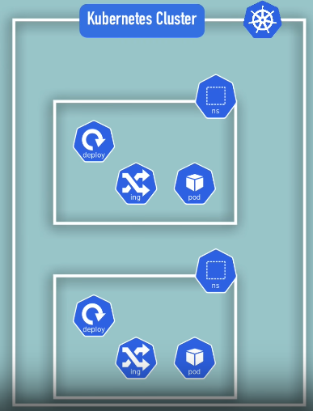
Default Namespaces
Bir cluster oluşturduğumuzda, Kubernetes bize varsayılan olarak bazı namespace’ler sağlar. Komut satırında kubectl get namespaces yazarsak, Kubernetes’in varsayılan olarak sunduğu namespace listesini görürüz.
c3ng0@ubn:~$ kubectl get namespace
NAME STATUS AGE
default Active 6d3h
kube-node-lease Active 6d3h
kube-public Active 6d3h
kube-system Active 6d3h
Şimdi, bunları tek tek inceleyelim. * 1) kube-system kube-system namespace, bizim kullanımımıza yönelik değildir. Yani, bu namespace’te herhangi bir şey oluşturmamalı veya değiştirmemeliyiz. Bu namespace’te yer alan componentler, sistem süreçleri, yönetici süreçler veya kubectl gibi bileşenlerdir.
kube-publicGenel olarak erişilebilir veriler bulunur. Bu namespace’te, cluster bilgilerini içeren ve kimlik doğrulama olmadan bile erişilebilen bir ConfigMap bulunur.kubectl cluster-infoyazarsak, bu ConfigMap bilgilerinin çıktısını alırız.
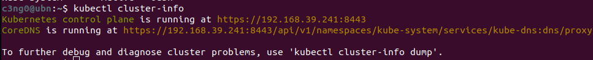
kube-node-leaseBu namespace’in amacı, nodeların kalp atış bilgilerini tutmaktır. Her node, kendisinin kullanılabilirlik bilgilerini içeren kendi objesini alır.
defaultdefault namespace, başlangıçta yeni bir namespace oluşturmadıysak, kaynakları oluşturmak için kullanacağımız alandır.
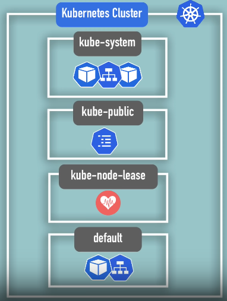
Tabii ki, yeni namespace ekleyip oluşturabiliriz. Bunu yapmak için, kubectl create namespace komutunu, namespace adıyla birlikte kullanabiliriz. Böylece, kendi namespace’imizi oluşturabilir ve kubectl get namespaces yazarsak, namespace’imiz listede görünecektir.
kubectl create namespace my-namespaceNamespace oluşturmanın bir diğer yolu, namespace config file kullanmaktır. Bu, namespace oluşturmanın daha kaliteli bir yoludur. Çünkü bu şekilde config file reposunda, clusterda hangi kaynakları oluşturduğumuzun geçmişi de olur.
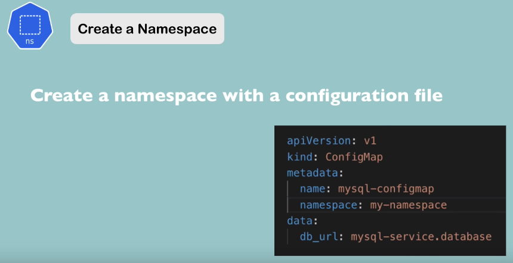
Ne Zaman & Nasıl Namespace Oluşturmalı
Şimdi, namespaces’in ne olduğunu, yeni namespaces oluşturabileceğimizi ve Kubernetes’in default olarak bazı namespace’ler sunduğunu gördük. Ancak, asıl soru şu: namespace’e neden ihtiyaç var? Ne zaman ve nasıl namespaces oluşturmalıyız?
Bazı use case durumlarından bahsedelim:
- Kaynaklar Namespaces’ta Gruplanırsa: Varsayalım ki, Kubernetes tarafından sağlanan tek bir default namespace’a sahibiz ve tüm kaynaklarımızı bu default namespaces’da oluşturuyoruz. Eğer karmaşık bir uygulamamız varsa ve bu uygulama birçok deployment içeriyorsa, bu deploymentlar birçok kopya oluşturuyorsa ve servisler, ConfigMap gibi kaynaklarımız varsa, çok kısa sürede varsayılan namespace’imiz farklı componentlerle dolup taşacaktır. Bu durumda, neyin ne olduğunu gözlemlemek de zor olacaktır, özellikle de birden fazla kullanıcı içerik oluşturuyorsa..
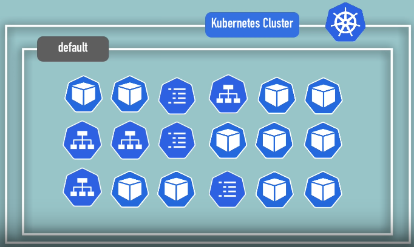
Böyle bir durumda namespaces’i kullanmanın daha iyi bir yolu, kaynakları namespaces’ta gruplandırmaktır. Örneğin, veritabanımızı ve gerekli tüm kaynaklarını dağıtacağımız bir veritabanı namespace oluşturabiliriz. Monitoring araçlarımızı dağıtacağımız bir monitoring namespace oluşturabiliriz. Elasticsearch ve Kibana gibi kaynakları dağıtacağımız bir Elastic Stack namespace oluşturabiliriz. Bu şekilde kaynaklarımızı cluster içinde mantıksal olarak gruplandırabiliriz.
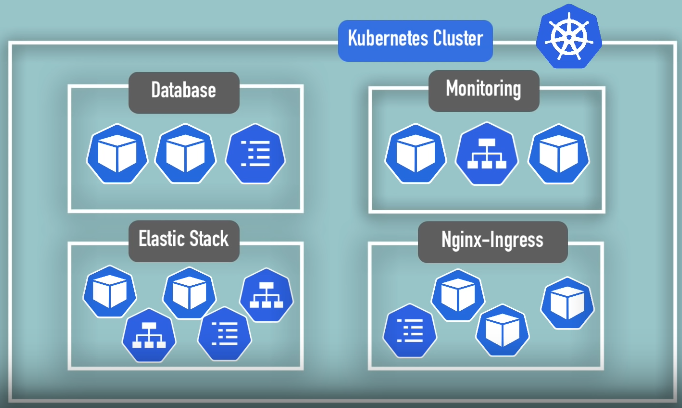
Kubernetes’in resmi dokümantasyonuna göre, eğer küçük projelerimiz ve 10’a kadar kullanıcımız varsa, namespaces kullanmamalıyız. Ancak Nina’nın kişisel görüşüne göre, kaynaklarımızı namespaces’ta gruplandırmak her zaman iyi bir fikirdir. Çünkü küçük bir projeye ve 10 kullanıcıya sahip olsak bile, uygulamamız için monitoring ve logging gibi ek kaynaklara ihtiyaç duyabiliriz.
- Conflicts: Birden Fazla Takım, Aynı Proje: Namespaces kullanmamız gereken bir diğer use case, birden fazla takımımız olduğunda ortaya çıkar. Bu senaryoda, aynı cluster’ı kullanan iki takımımız olduğunu varsayalım. Bir takım,
my-app-deploymentadlı bir deployment oluşturur ve bu deployment belirli bir konfigürasyona sahiptir. Eğer diğer takım, aynı ada sahip ancak farklı bir konfigürasyona sahip bir deployment oluşturursa ve bunu uygularsa(apply), ilk takımın deployment’ını geçersiz kılabilir. Jenkins veya otomatik bir deployment aracı kullanıyorlarsa, diğer takımın deployment’ını bozduklarının farkına bile varmazlar.
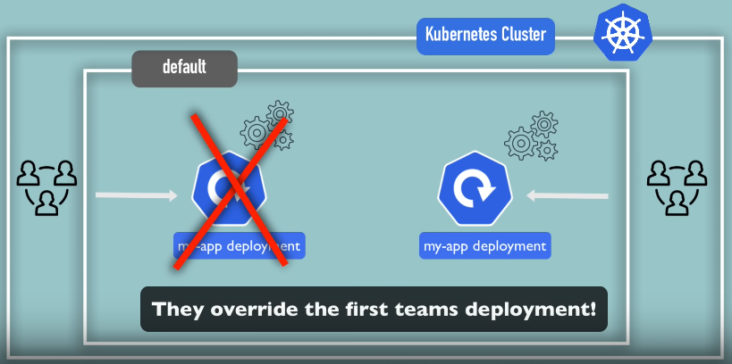
Bu tür çakışmaları önlemek için namespaces kullanabiliriz. Her takım, kendi namespace’inde çalışarak diğerini rahatsız etmeden rahatça çalışabilir.
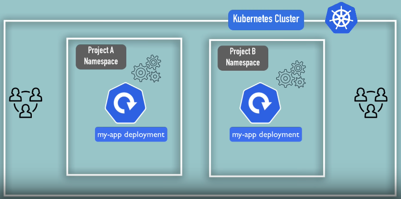
- Kaynak Paylaşımı: Staging ve Development: Namespaces kullanmanın bir diğer use case’i, aynı clusterda hem staging hem de development ortamlarını barındırmak istediğimizde ortaya çıkar. Bu durumda, örneğin nginx controller veya Elasticsearch gibi kaynakları her iki ortamda da kullanabiliriz. Bu şekilde, bu ortak kaynakları iki farklı clusterda da kurmak zorunda kalmayız. Hem staging hem de development ortamı bu kaynakları kullanabilir.
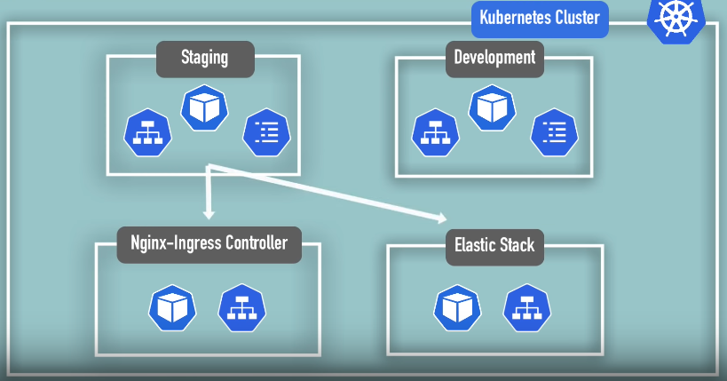
- Kaynak Paylaşımı: Blue/Green Deployment: Namespacesnı kullanmanın bir diğer durumu, Blue/Green deployment stratejisini kullandığımızda ortaya çıkar. Bu durumda, aynı clusterda iki farklı production sürümüne sahip olmak isteriz . Biri aktif olan ve şu anda production olan sürüm, diğeri ise bir sonraki production sürümü olacaktır. Bu durumda, her iki üretim namespace da ortak kaynakları kullanabilir, örneğin nginx controller veya Elasticsearch gibi.
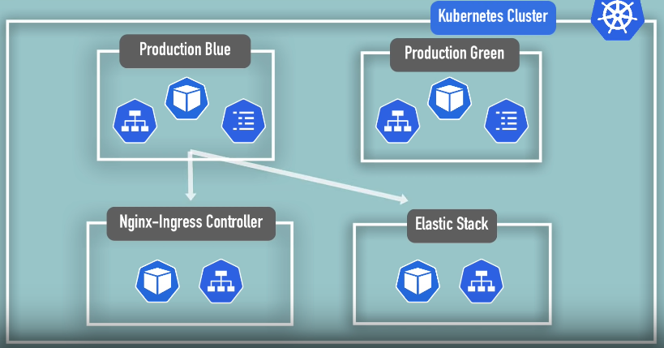
- Namespaces’e Erişimi ve Kaynakları Sınırlama: namespacesnı kullanmanın bir diğer durumu, kaynakları ve erişimi sınırlamaktır. Birden fazla takımın aynı clusterda çalıştığı senaryoda, her takımın kendi namespace’nde çalışmasını sağlayabilir ve diğer namespaces’te hiçbir şey yapmalarına izin vermeyiz. Bu şekilde, bir takımın diğerinin işine müdahale etme riskini azaltırız. Ayrıca, namespace düzeyinde kaynak kotaları tanımlayarak her takımın ne kadar CPU, RAM ve depolama kullanabileceğini de sınırlayabiliriz. Bu, bir takımın çok fazla kaynak tüketmesini ve diğer takımların kaynaklarının tükenmesini önler.
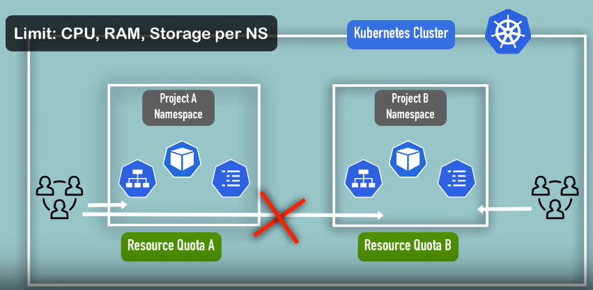
Bu senaryoları inceledikten sonra, projenizde namespacesnı nasıl kullanmamız gerektiğini daha iyi analiz edebileceğimizi umuyoruz.
NameSpaces Özellikleri
Namespaces’imizi nasıl gruplandıracağımıza ve kullanacağımıza karar vermeden önce dikkate almamız gereken birkaç özellik var.
- İlk olarak, çoğu kaynağa başka bir namespacendan erişemeyiz. Örneğin, bir namespace’teki bir ConfigMap, başka bir namespace’teki bir Servisi referans alıyorsa, bu ConfigMap’i başka bir namespace’de kullanamayız. Aynı referans ve aynı ConfigMap olsa bile: her namespace için, kendi ConfigMap’ini tanımlamamız gerekecektir. Aşağıdaki resimde bunun örneği vardır. Project A içerisindeki ConfigMap, Database servisine referans edilmiştir. Bu sebeple bu ConfigMap, Project B için kullanılamaz. Aynı ConfigMap projectB içerisinde de oluşturulmalıdır ve referans edilmelidir.

Bu, Secret’lar için de geçerlidir. Örneğin, ortak bir servisin kimlik bilgilerine sahipseniz, bu kimlik bilgilerini her namespace’de oluşturmamız gerekecektir. Ancak, namespace’ler arasında paylaşabileceğimiz bir kaynak türü Servislerdir.
Bir configMap, bir namespace’deki servisi referans aldığında, URL’sinde namespace adı da eklenir. Bu şekilde, diğer namespace’lerdeki servislere erişebiliriz. Bu, Elasticsearch veya nginx gibi paylaşılan kaynakları kullanmanın pratik bir yoludur.
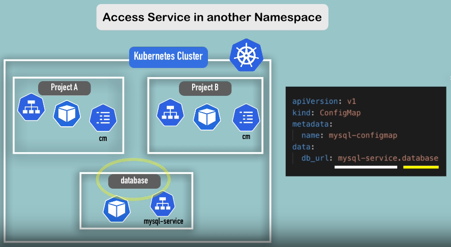
Kubernetes’teki bazı componentler namespace olmadan clusterda global olarak bulunur. Bu componentler, namespace’a ait olmayan componenetler olarak adlandırılır. Örneğin, Volume’ler veya node’lar cluster genelinde erişilebilir.
Namespace’siz componentleri listelemek için:
kubectl api-resources --namespaced=falseNamespaced componentleri listelemek için:
kubectl api-resources --namespaced=trueŞimdi, namespacesnın ne olduğunu, ne zaman ve nasıl kullanmamız gerektiğini öğrendik. Ayrıca, bazı özellikleri dikkate almamız gerektiğini de öğrendik.
Namespaces Component Oluşturma
Şimdi, namespace’te component oluşturmayı görelim. Bir önceki örnekte, config dosyalarını kullanarak componentler oluşturduk ve namespace belirtmedik. Bu durumda, componentler varsayılan olarak default namespace’te oluşturuldu.
apiVersion: v1
kind: ConfigMap
metadata:
name: mysql-configmap
data:
db_url: mysql-service.database
Bu configMap componentini apply edelim: kubectl apply -f config-map komutunu uygularsak ve kubectl get config-map komutunu çalıştırırsak, config map default namespace’te oluşturulmuş olur.
Dikkat edin ki
kubectl get config-mapkomutunda bile bir ad alanı kullanmadık çünkükubectl getveyakubectlkomutları varsayılan ad alanınıdefaultolarak alır. Yanikubectl get config-mapkomutu aslındakubectl get config-map -n defaultile aynıdır, bu nedenle bu komutlar aynıdır.
c3ng0@ubn:~$ kubectl apply -f mysql-configmap.yaml
configmap/mysql-configmap created
c3ng0@ubn:~$ kubectl get configmap
NAME DATA AGE
kube-root-ca.crt 1 6d4h
mongodb-configmap 1 5h1m
mysql-configmap 1 6s
c3ng0@ubn:~$ kubectl get configmap -n default
NAME DATA AGE
kube-root-ca.crt 1 6d4h
mongodb-configmap 1 5h1m
mysql-configmap 1 18s
Bu, varsayılan olarak varsayılan ad alanını aldığı için bir kısayoldur.
- Bu config map’i belirli bir namespace ile oluşturmanın bir yolu,
kubectl applykomutunu kullanmak ve--namespacebayrağını eklemek. Ardından namespace adını eklemektir. Bu, config map’i belirli bir namespace ile oluşturacaktır ve bu sadece bir yoludur.
kubectl apply -f mysql-configmap.yaml --namespace=my-namespace- Başka bir yol, config dosyasının kendisinde yapmaktır. Bu configmap yapılandırma dosyasını ayarlayarak, hedef namespace bilgilerini ekleyebiliriz. Yani, metadata içinde
namespaceözelliğini ekleyebiliriz.
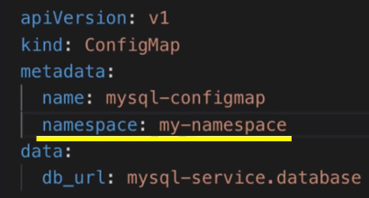
- Bu config dosyasını tekrar
kubectl applykomutuyla uygularsak ve bu namespace alanında oluşturduğumuz bileşeni almak istersek,kubectl getkomutuna bayrağı eklememiz gerekir çünkü varsayılan olarak çalıştırırsak, sadece default namespace’leri kontrol eder. Nina,namespaceözniteliğini yapılandırma dosyasında kullanmamızı tavsiye ediyor. Çünkü
- Daha iyi belgelenmektedir. Sadece yapılandırma dosyasına bakarak componentin nerede oluşturulduğunu bilebiliriz ve bu önemli bir bilgi olabilir.
- Otomatik dağıtım kullanıyorsak ve sadece config dosyalarını uyguluyorsak, bu daha uygun bir yol olacaktır.
Örneğin, bir ekibin kendi namespace’ine sahip olduğu ve tamamen bu namespace ile çalışması gerektiği bir senaryo düşünürsek, her kubectl komutuna bu namespace etiketini eklemek oldukça sinir bozucu olabilir. Bu yüzden, default veya aktif namespace’in; varsayılan namespace’ten seçtiğimizi herhangi bir namespace’e değiştirmek için bir yol var. Aracımızın adı Kubens. Bu aracı yüklememiz gerekiyor.
Ubuntu’da indirmek için:
kubectx ve kubens depolarını klonlayalım:
git clone https://github.com/ahmetb/kubectx.git ~/.kubectx
sudo ln -s ~/.kubectx/kubectx /usr/local/bin/kubectx
sudo ln -s ~/.kubectx/kubens /usr/local/bin/kubens
İndirilen dosyaların çalıştırılabilir olduğundan emin olalım:
chmod +x ~/.kubectx/kubectx
chmod +x ~/.kubectx/kubens
kubectx ve kubens’i kontrol edelim:
kubectx
kubens
kubens yüklendikten sonra, sadece kubens komutunu çalıştırabiliriz. Bu bize tüm namespace’lerin bir listesini verir ve şu anda aktif olanı (varsayılan olanı) vurgular.
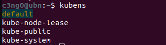
Aktif namespace’i değiştirmek istersek:
kubens <Namespace_ismi>komutunu çalıştırabiliriz. Aktif ad alanını değiştirecektir. kubens komutunu tekrar çalıştırırsak, aktif olanın yeni namespace’iniz olduğunu görürüz. Bu şekilde, kubectl komutlarını namespace sağlamadan çalıştırabiliriz. Ancak, namespace’ler arasında çok sık geçiş yapıyorsak, bu bizim için pek uygun olmayacaktır.
Kubernetes Ingress Explained
Bu konuda Ingress’in ne olduğundan, nasıl kullanılacağından ve farklı kullanım senaryolarından bahsedeceğiz.
External Service vs Ingress
Öncelikle, basit bir Kubernetes cluster’ı hayal edelim. Bu cluster’ımızda, uygulamamızın bir Pod’u ve buna karşılık gelen bir Servisi (hizmeti) olan my-app-service var. Bir UI uygulaması için ilk gereksinim, uygulamanın tarayıcı üzerinden erişilebilir olmasıdır. Bu, dışarıdan gelen isteklerin uygulamaya ulaşabilmesi anlamına gelir. Bunun için kolay bir yol, uygulamaya HTTP protokolü kullanarak, node’un IP adresi ve portu aracılığıyla erişmek olan bir external service (dış hizmet) kullanmaktır.

Ancak, bu yöntem test durumları ve hızlı bir şeyler denemek için uygundur, nihai ürün böyle olmamalıdır. Nihai ürün şu şekilde olmalıdır: Uygulamamızın bir alan adı (domain name) ve güvenli bir HTTPS bağlantısı olmalıdır. Bunu yapmanın yolu, Kubernetes componenti olan Ingress’i kullanmaktır. Bu durumda, my-app-ingress adında bir Ingress’e ve external service(dış hizmet) yerine bir internal service’e(iç hizmete) sahip oluruz. Yani uygulamamıza IP adresi ve port üzerinden değil, Ingress aracılığıyla erişiriz. Tarayıcıdan gelen istek önce Ingress’e ulaşır, ardından Ingress bu isteği iç hizmete yönlendirir ve en sonunda Pod’a ulaşır.
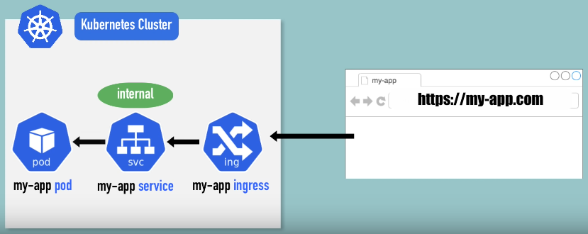
External Service YAML Config
Şimdi, external service yapılandırmasının nasıl göründüğüne bir göz atalım.
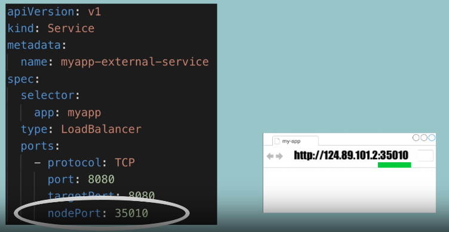
Servisin loadBalancer türünde olduğunu görürüz. Bu, servise bir external IP adresi atayarak public’e açtığımız anlamına gelir. Kullanıcı bu IP adresi ve belirlenen port numarasını kullanarak uygulamaya erişebilir.
Ingress YAML Config
Ingress ile bu konfigürasyon farklıdır. Ingress’in syntax’ına bakalım.
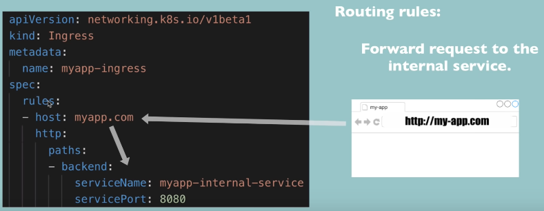
kind: Ingressile Ingress olduğunu belirtiriz.spectüm yapılandırmanın olduğu yerdir.rulesveya routing rules aracılığıyla yapılır. Bu tanımlanan rules, belirli bir hosta yapılan tüm isteklerin internal servise yönlendirilmesini tanımlar. (Yukarıda net bir şekilde gösterilmiştir.) Kullanıcı tarayıcıda bu hostun adresini girer ve Ingress, bu istekleri internal servise yönlendirir.pathsise alan adından sonraki URL yolunu ifade eder. Domain name’den sonra gelen herşeyi paths içerisinde tanımlarız. 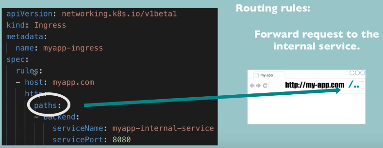
Şu anda yapılandırmada HTTPS bağlantısı için herhangi bir şey ayarlanmamıştır, sadece HTTP protokolü kullanılıyor. Ingress componentini kullanarak HTTPS yapılandırmasının nasıl yapılacağını az sonra göreceğiz.
Config içerisindeki
http, URL adresindeki HTTP veya HTTPS’i ifade etmiyor. Bu, gelen isteğin internal servise yönlendirildiği protokoldür. 1. Adım: tarayıcıdan Ingress’e istek gönderilmesilidir Config içerisindekihttpise ikinci adımdır. Gelen isteğin internal servise yönlendirildiği protokoldür. Bunu birinci adımla karıştırmamak gerekir. 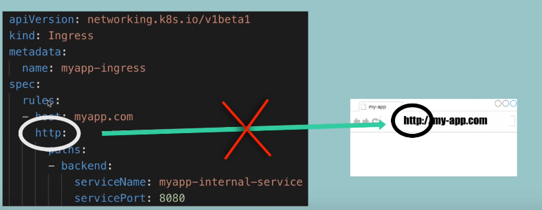
Ingress Konfigürasyonu
Ve şimdi, internal servisin bu Ingress’e nasıl görüneceğine bakalım. Temelde, backend, gelen isteğin yönlendirileceği hedeftir ve servisin adı, internal servisin adını karşılamalıdır.
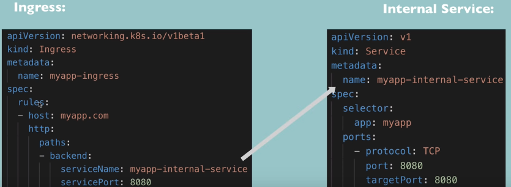
Ayrıca port, internal servis portu olmalıdır.
Burada gördüğünüz gibi, external ve internal servisler arasındaki tek fark, internal serviste node portunun olmamasıdır. Node portu 30000’den başlayan üçüncü port burada yoktur. Ayrıca tipi de bir load balancer değil, cluster IP olan default internal servis tipidir.
..
..
spec:
rules:
- host: myapp.com
..
Bu, geçerli bir domain adresi olmalıdır. Buraya rastgele bir şey yazamayız. Ayrıca bu domain namei, Kubernetes clusterımızın entry point’i olan node’un IP adresine eşlemeliyiz. Örneğin, Kubernetes clusterımızda bir node’u entry point olarak belirlersek, bu domain adını o node’un IP adresine eşlemelisiniz. Veya Kubernetes cluster’ımızın dışında bir sunucu yapılandırırsak, bu sunucunun IP adresine eşlemeliyiz.
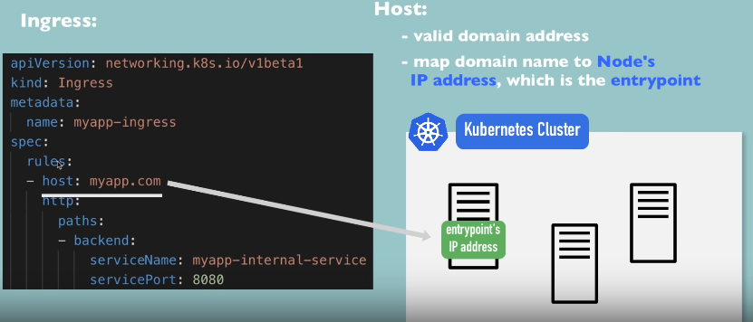
Şimdi, Kubernetes Ingress componentini gördüğümüze göre, Ingress’i clustera nasıl konfigüre edeceğimize bakalım. Başlangıçta gördüğümüz diyagramı hatırlayalım.
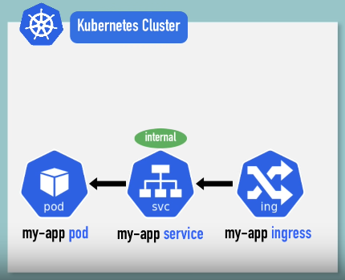
Temelde bir pod, servis ve buna karşılık gelen Ingress var. Ancak, yalnızca Ingress componentini oluşturmak yeterli değildir. Ingress routing rules’un çalışması için ek olarak bir Ingress controller’a ihtiyacımız var.
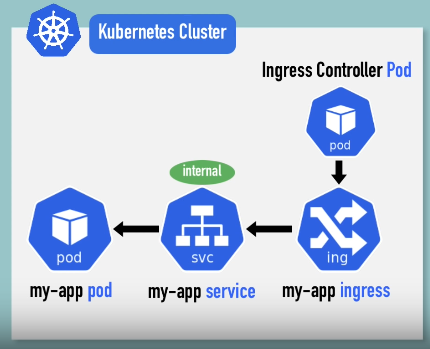
İlk adım, Ingress controllers kurmak olacaktır. Bu, Kubernetes clusterımızdaki nodelarımızda çalışan başka bir pod veya pod setidir ve Ingress rules’un değerlendirilmesi ve işlenmesini sağlar. Az önce gördüğümüz Ingress componentinin YAML dosyası, temelde sadece ingress bölümüdür.
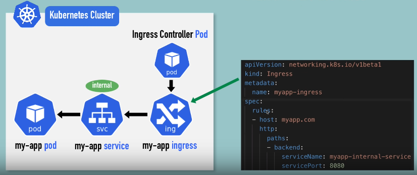
Ingress Controller
Ingress denetleyicisi tam olarak nedir? Ingress controller’ın işlevi, clusterda tanımladığımız tüm kuralları(rules) değerlendirmek ve bu şekilde tüm yönlendirmeleri yönetmektir.
Ingress Controller, yapılandırdığımız domain name veya subdomain name kuralları için clusterda entry point olacaktır ve tüm kuralları değerlendirecektir. Clustera 50 kural veya 50 Ingress componenti oluşturmuş olabiliriz; yine de tüm kuralları değerlendirilecektir ve hangi routing rule’un belirli bir istek için geçerli olduğunu belirleyecektir.
Bu Ingress uygulamasını clusterımıza kurmak için birçok third party uygulamasından hangisini seçeceğimize karar vermemiz gerekir.
Kubernetes Docs - Ingress Controller
burada seçebileceğiniz farklı Ingress denetleyicilerini görebilirsiniz. Kubernetes’in kendi controllerı olan Kubernetes Nginx Ingress Controller da var, ancak başka seçenekler de mevcut.
Clusterımıza Ingress controller kurduktan sonra, Ingress rules oluşturup tüm konfigürasyonu çalıştırabiliriz. Ingress’in bir Kubernetes clusterında nasıl kullanılabileceğini gösterdikten sonra, dış istekleri alabilmek için tüm clusterı ayarlama konusunun önemli olduğunu düşünüyorum.
Öncelikle, Kubernetes clusterımızın çalıştığı ortamı düşünmeliyiz. Amazon Web Services, Google Cloud gibi bir cloud service provider kullanıyorsak, bu sağlayıcının sağladığı bir yük loadbalancer kullanabiliriz. Dış istekler önce bu loadbalancer’a ulaşır, ardından Ingress controller’a yönlendirilir. Cloud Service Provider kullanmanın avantajı, kendi loadbalancer’ımızı uygulamak zorunda olmamamızdır. Bu, loadbalancer işlemini ve dış isteklerin yönlendirilmesini daha kolay hale getirir. Ancak, bulut ortamında bile farklı yollarla yapılandırma yapabiliriz, fakat bu yöntem en yaygın stratejilerden biridir.
Şimdi, Kubernetes clusterımızı bare metal bir ortamda dağıtıyorsak, bu kısmı kendimiz yapmamız gerekecek.
Kubernetes clusterımıza bir entry point yapılandırmamız gerekecektir ve bunu yapmanın birçok farklı yolu vardır. Cluster içinde veya dışında ayrı bir sunucu olarak bir entry point sağlamamız gerekecektir.
- Bu entry point, yazılım veya donanım çözümü olabilecek harici bir proxy sunucusu olabilir ve clustera entry point olarak loadbalancer rolünü üstlenir.
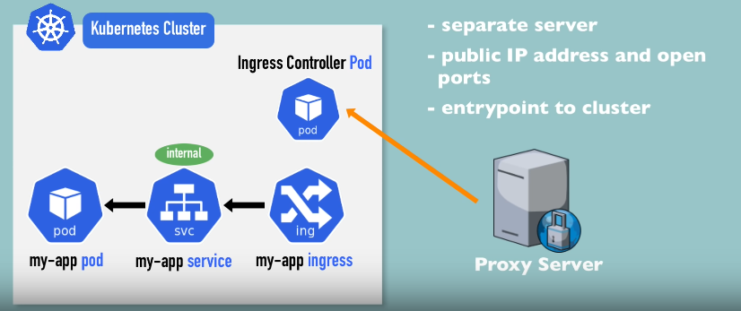
- Temel olarak, bu şu anlama gelir: Ayrı bir sunucuya sahip olacağız ve bu sunucuya bir genel IP adresi vereceğiz, gelen isteklerin kabul edilmesi için portları açacağız. Bu proxy sunucu, clusterımıza tek entry point olarak işlev görecek, yani Kubernetes clusterımızdaki hiçbir sunucu genel olarak erişilebilir bir IP adresine sahip olmayacaktır, bu da oldukça iyi bir güvenlik uygulamasıdır. Tüm istekler proxy sunucuya girecek ve bu, isteği Ingress controller’a yönlendirecektir. Ingress controller daha sonra bu belirli istek için hangi Ingress kuralının(rule) geçerli olduğunu belirleyecek ve tüm internal istek yönlendirmesi gerçekleşecektir.
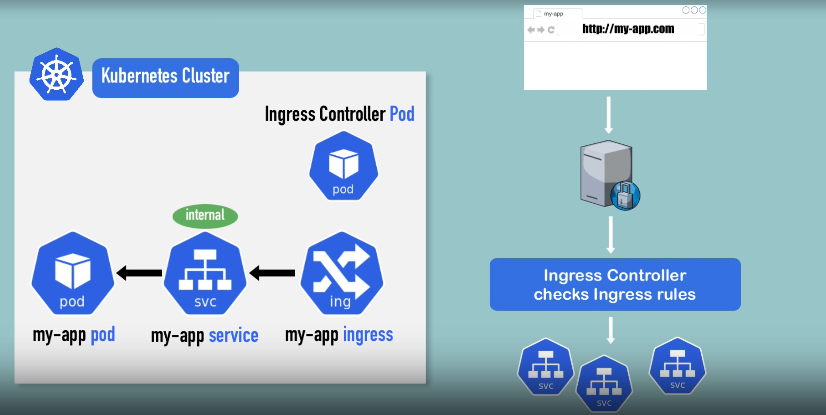
Söylediğimiz gibi farklı ortam ve yaklaşımlara bağlı olarak bunu yapılandırmanın ve ayarlamanın farklı yolları vardır, ancak clusterın nasıl çalıştığını anlamak önemlidir.
Minikube Ingress Konfigürasyonu
Biz tüm bunları dizüstü bilgisayarımızda Minikube kullanarak yapacağımız için kurulum oldukça basit olacak ve bu, cluster ayarlarımıza tam olarak uygulanmasa bile, tüm bu şeylerin pratikte nasıl çalıştığını görmüş olacağız. İlk olarak, Minikube’da Ingress controller’ı kurmak gerekiyor ve bunu yapmak için şu komutu çalıştırabiliriz:
minikube addons enable ingressBu komut, Kubernetes NGINX Ingress controller’ı otomatik olarak başlatır ve yapılandırır. Bu, Minikube’un out of the box özelliğidir ve üretim ortamlarında da güvenle kullanılabilir. Bu komut ile Ingress controller clusterımızda yapılandırılacak ve:
kubectl get pod -n kube-systemkomutunu çalıştırarak Ingress controller pod’unun çalıştığını görebiliriz.
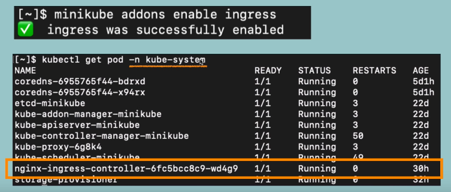
Ingress controller kurulduktan sonra, Ingress controller’ın kullanacağı bir Ingress kuralı oluşturabiliriz.
Eğer
kubernetes-dashboardcomponenti yoksa şu komutla indirebilirsinizkubectl apply -f https://raw.githubusercontent.com/kubernetes/dashboard/v2.7.0/aio/deploy/recommended.yamlBu komut, Kubernetes Dashboard için gerekli kaynakları oluşturur.
Şu an minikube clusterında harici olarak erişilebilir olmayan bir kubernetes-dashboard var. İç hizmet ve pod zaten mevcut olduğundan, Kubernetes dashboard için bir Ingress kuralı yapılandıracağız, böylece bir tarayıcıdan bir alan adı kullanarak erişebiliriz.
kubectl get all -n kubernetes-dashboardBu komut kubernetes-dashboard’daki tüm componentleri gösterir.
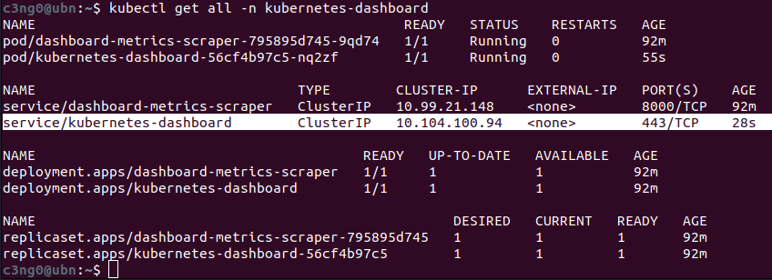
service/kubernetes-dashboard ClusterIP 10.104.100.94 <none> 443/TCP 28sKubernetes Dashboard için zaten bir internal servisimiz ve çalışan bir pod’umuz olduğu için, Kubernetes Dashboard’a erişmek amacıyla bir Ingress kuralı oluşturabiliriz. Hadi bunu yapalım.
Kubernetes Dashboard için bir Ingress oluşturacağım. ,
apiVersion: networking.k8s.io/v1
kind: Ingress
metadata:
name: dashboard-ingress
namespace: kubernetes-dashboard
spec:
rules:
Bunlar sadece metadata. * name: dashboard-ingress olacak., * namespace: hizmetin ve pod’un olduğu aynı namespace olacak. * spec: içerisinde kuralları tanımlayacağız.
apiVersion: networking.k8s.io/v1
kind: Ingress
metadata:
name: dashboard-ingress
namespace: kubernetes-dashboard
spec:
rules:
- host: dashboard.com
http:
paths:
- backend:
serviceName: kubernetes-dashboard
servicePort: 80
- İlk kuralımız,
host:olacak.dashboard.comolarak tanımladık. httpforwarding, internal servise yapılacak.paths:’ i (all path) olarak bıraktık.backend:, servisin backend’i olacak.servicename, az önceki çıktıda gördüğümüz servis adı.servicePort:ise servisin dinlediği port. Bunu da az önce paylaştığım çıktıda görüyoruz.80/TCP
Bu, Ingress konfigürasyonumuz olacak ve dashboard.com’a yönlendirilen her isteği, internal kubernetes-dashboard servisine yönlendirecek. Internal Servis olduğunu biliyoruz çünkü türü ClusterIP, yani External IP adresi yok.
NAME TYPE CLUSTER-IP EXTERNAL-IP PORT(S) AGE
service/kubernetes-dashboard ClusterIP 10.101.218.170 80/TCP 82m
Bu aradadashboard.com hostnamei uydurduk, hiçbir yere kaydedilmedi ve ayrıca bu hostname’in hangi IP adresine çözülmesi gerektiğini hiçbir yere yapılandırmadık. Bu, her zaman yapılandırmamız gereken bir şeydir.
Şimdi bu Ingress rule’u apply edelim.
kubectl apply -f dashboard-ingress.yaml
Eğer oluştururken şu hatayı alırsanız:
~c3ng0@ubn:~$ kubectl apply -f dashboard-ingress.yaml Error from server (InternalError): error when creating "dashboard-ingress.yaml": Internal error occurred: failed calling webhook "validate.nginx.ingress.kubernetes.io": failed to call webhook: Post
"https://ingress-nginx-controller-admission.ingress-nginx.svc:443/networking/v1/ingresses?timeout=10s": service "ingress-nginx-controller-admission" not foundYapmanız gereken şey şu komutu kullanmaktır. Gereken
ingress-nginx-controllerindirilecek.~kubectl apply -f https://raw.githubusercontent.com/kubernetes/ingress-nginx/master/deploy/static/provider/cloud/deploy.yaml
ingress-nginx-controlleroluşturduktan sonra da şöyle bir hata alırsanız eğer:~c3ng0@ubn:~$ kubectl apply -f dashboard-ingress.yaml Error from server (InternalError): error when creating "dashboard-ingress.yaml": Internal error occurred:
failed calling webhook "validate.nginx.ingress.kubernetes.io": failed to call webhook: Post "https://ingress-nginx-controller-admission.ingress-nginx.svc:443/networking/v1/ingresses?timeout=10s": service "ingress-nginx-controller-admission" not foundBunun çözümü sadece biraz beklemek. Çünkü yeni oluşturduğumuz servisin oluşması biraz zaman alabilir 😁😁
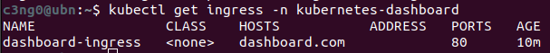
Ingress oluşturuldu. Namespace’te Ingress’i görmeliyiz. Adresin boş olduğunu görebiliriz çünkü Ingress’e adres ataması biraz zaman alır. Bu hostname’e eşlenecek IP adresini almak için beklememiz gerekecek.
Adresi aldıktan sonra bu adresi aşağıdaki şekilde hosts dosyamızda tanımlıyoruz.
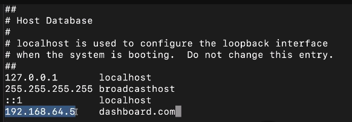
Bu yerel olarak çalışır, tarayıcıda dashboard.com yazarsak, bu IP adresine eşlenecek ve istek Minikube clustera gelecek, Ingress controller’a teslim edilecek ve Ingress controller bu kuralı değerlendirip isteği servise yönlendirecek. İhtiyacımız olan tüm konfigürasyon bu.
Şimdi gidip tarayıcıya dashboard.com yazacağız ve Kubernetes Dashboard’umuzu burada göreceğiz.
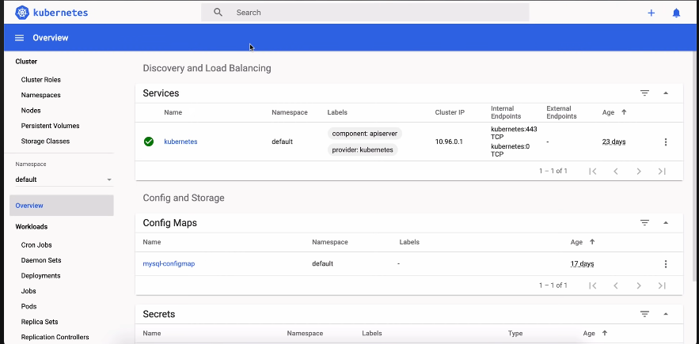
Ingress Default Backend
Ingress ayrıca default backend adlı bir şeye sahiptir, bu nedenle kubectl describe Ingress komutunu kullanarak Ingress’in adını ve namespace’ini belirttiğinizde şu çıktıyı elde edersiniz.
kubectl describe ingress dashboard-ingress -n kubernetes-dashboard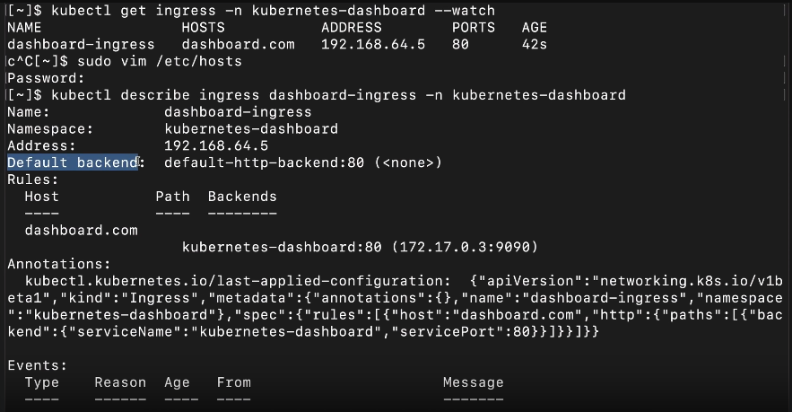
Burada, 80 numaralı default-http-backend portuna eşlenen bir default backend attribute’u vardır. Bu, Kubernetes clusterına gelen ve herhangi bir backend’e eşlenmeyen istekleri ele alır, yani bu isteği bir servise eşlemek için herhangi bir kural bulunmayan bir istek olduğunda, bu default backend’in bu isteği işleyeceği anlamına gelir. Bu servisi clusterımız içinde oluşturup tanımlamazsak, Kubernetes bu servise yönlendirmeye çalışacak, bulamayacak ve bir varsayılan hata yanıtı alacağız.
Örneğin, konfigüre etmediğimiz bir adrese istek gönderirsek, sadece “sayfa bulunamadı” mesajını alırız.
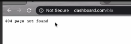
Bu, sayfa bulunamadığında özel hata mesajları tanımlamak veya gelen ve uygulamanızın işleyemeyeceği istekler geldiğinde kullanıcıların anlamlı bir hata mesajı veya özel bir sayfa görmesini sağlamak için kullanılabilir; böylece kullanıcıları ana sayfamıza yönlendirebiliriz.
Özetle Şimdiye kadar Ingress’in ne olduğunu ve nasıl kullanabileceğimizi gördük. Ayrıca Minikube’da bir Ingress kuralının nasıl oluşturulacağına dair bir demo da yaptık, ancak sadece çok temel bir Ingress yaml konfigürasyonu kullandık; sadece bir path ile bir internal servise basit bir yönlendirme yaptık. Ancak Ingress configuration ile sadece temel yönlendirmeden çok daha fazlasını yapabiliriz.
Multiple paths for Same Host
Şu use case’i düşünelim: Google bir domaine sahip ama birden fazla hizmet sunmaktadır. Örneğin, bir Google hesabımız varsa, Google Analytics’i kullanabiliriz, alışveriş yapabiliriz, bir takvime sahip olabiliriz, Gmail’e sahip olabiliriz vb.. Tüm bunlar, aynı domaine erişilebilen farklı uygulamalardır. Buna benzer bir uygulamamız olduğunu düşünelim; aynı ekosistemin bir parçası olan iki ayrı uygulama sunuyoruz. Ancak bunları ayrı URL’lerde tutmak istiyoruz.
- Yapabileceğimiz şey, “rule” içinde Hostu tanımlamaktır:
myapp.com. Path bölümünde birden fazla yol tanımlayabiliriz. Kullanıcı, analytics uygulamamıza erişmek isterse, myapp.com/analytics adresini girmesi gerekecek ve bu, isteği pod içindeki internal analytics servise yönlendirecektir. Veya alışveriş uygulamasına erişmek isterse, URL myapp.com/shopping olacaktır. Bu şekilde, tek bir Host ve bir Ingress ile, birden fazla uygulamaya yönlendirme yapabiliriz.
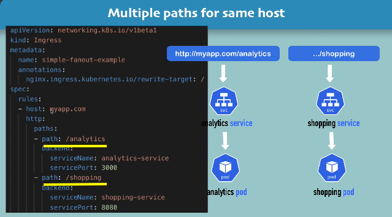
Başka bir use case ise, bazı şirketlerin farklı uygulamaları erişilebilir kılmak için URL’leri kullanmak yerine sub-domains kullanmasıdır. Yani, myapp.com/analytics yerine, bir sub-domain oluştururlar: analytics.myapp.com. Uygulamamız bu şekilde yapılandırılmışsa, şu şekilde görünecektir:
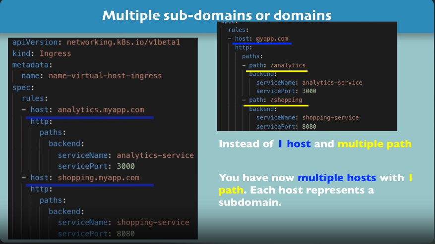
önceki örnekteki gibi tek bir host ve birden fazla path yerine, burada birden fazla host olur ve her host bir subdomaini temsil eder.
TLS Certificate Konfigürasyonu
Bu başlıkta ele alacağımız son konu, TLS sertifikası yapılandırmasıdır. Şimdiye kadar sadece HTTP istekleri için Ingress yapılandırması gördük, ancak Ingress’te HTTPS yönlendirmeyi yapılandırmak da çok kolaydır. Yapmamız gereken tek şey, rules bölümünün üstüne TLS adında bir özellik tanımlamak, host değeri, aynı hostu myapp.com ve bir TLS sertifikasını içeren oluşturduğumuz secret’ın adını belirtmektir. Ingress ve Secret konfigürasyonu şu şekilde olacaktır:
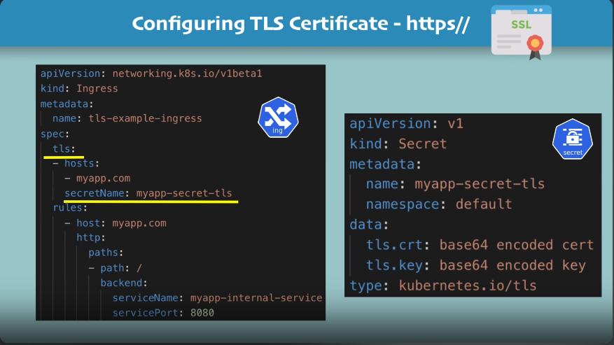
namebir referanstır.dataTLS sertifikası ve TLS anahtarını içerir.
Önceki konulardan hatırlarsanız, type belirtiyorduk. Kubernetes’te TLS adında belirli bir secret türü, TLS secret’ı oluştururken bu türü kullanmamız gerekiyor.
Burada tutulması gereken üç küçük not var: * Birincisi, bu verilerin anahtarlarının tam olarak bu şekilde adlandırılması gerektiğidir. tls.crt, tls.key. * İkincisi, bu değerler, sertifika veya anahtar içeriklerinin kendisidir, dosya yolu veya konumu değil, bu nedenle tüm içeriği buraya base64 kodlamamız gerekiyor. * Üçüncüsü, secret’ı, Ingress bileşeniyle aynı namespace ile oluşturmamız gerekiyor. Aksi takdirde, farklı bir namespace’teki bir secret’a referans veremeyiz.